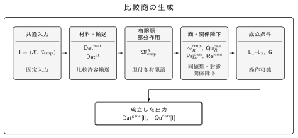
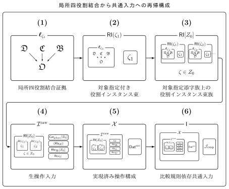
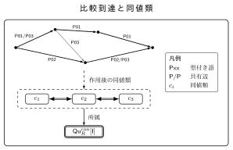
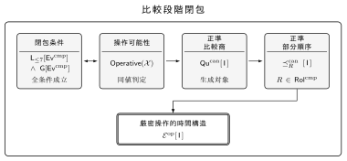
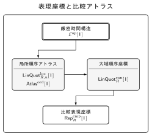

4 比較段階閉包と正準表現
4.1 正準比較商の生成
4.1.1 比較段階構成の定義
実現済み操作構成から、比較段階で使用する受容網、ソース側トークン族、比較到着写像群、比較側回復写像群、比較側・ソース側関係を抽出し、型付き比較規則族とともに比較段階材料データムを構成する。比較規則族が指定する比較許容入力に基づき、ソース一致部分写像、比較輸送成分、型付き有限語とその誘導部分作用、局所閉路指定の実体化、比較到達同値関係、成分商、正準射影および商上比較二役割関係を定義する。七つの比較段階条件と全純粋輸送閉路条件が成立する場合、生成済みの比較段階対象から、比較貼り合わせデータムおよび正準比較商を構成する。
本章では、比較段階に固有な対象の複合上付き を、記号根とから比較段階への帰属が 一意に定まる場合に限りと略記する。ただし、ソース側関係 と区別するため、 は完全形を保つ。


また、役割型と受容局面の一組を各記号根の完全形で初出させる。 その後、同じ定義、命題または証明内で受容局面が固定され、 完全形へ一意に復元できる場合に限り、受容局面の下付きだけを 省略する。役割型、動く族添字、異なる受容局面および真の分岐を 選ぶ残余修飾は完全形を保つ。

図中の数式


![\mathsf{Dat}^{\mathrm{glue}}[\mathsf{I}]\mathchar 44\relax\allowbreak\quad%
\mathsf{Qu}^{\mathrm{can}}[\mathsf{I}]](math-S4/ffefbe7f8e7d0e09ce051ec7c94ff0fbe99a669cc06897a4d3b7113df27b5dab.svg)
定義 4.1 (比較規則依存共通入力).


同入力に依存する任意の対象 の評価表記を

![\mathsf{F}\left[\mathsf{I}\right]:=\mathsf{F}\left(\mathcal{X};\mathcal{J}_{%
\mathrm{cmp}}\right)](math-S4/b5151257e78763745d778a6eb5a9e4300ed32c029382a7d388013663203c124f.svg)
によって定める。



![\mathsf{RI}[Z_{0}]](math-S4/ee7ef67d6a003ae660de689eb8a958190c02ebcf3d82a3440f3e54e966cc3c22.svg)

図中の数式


![\mathsf{Car}_{\mathrm{phys}}[Z_{0}]](math-S4/dd617496eb076a0c6bc80b73fcabb99dde2030db80b3bbae0226da03ffac4990.svg)


定義 4.2 (比較段階材料データム).

![\displaystyle\mathsf{Dat}^{\mathrm{mat}}\left[\mathsf{I}\right]](math-S4/404ee8462c0642a74b213fc66a5765d68e2e2f90fd487ef9528bd6a676ac572c.svg)

第一成分は観測者側受容網、第二成分はソース側トークン族、第三成分は比較到着写像族、第四成分は比較側回復写像族、第五成分は比較側関係族とソース側関係の順序対である。第六成分は、比較許容位置対、入力同期対共同輸送関係および局所純粋輸送閉路指定を与える型付き比較規則族である。
4.1.2 比較段階判定条件
定義 4.3 (比較許容位置対と入力同期対共同輸送関係).
![\mathsf{Dat}^{\mathrm{mat}}\left[\mathsf{I}\right]](math-S4/da0f3a4d977f5dfc3e7da57b060f8baaebe72471c96a73cd6b635634c4167d6b.svg)
各
![(u\mathchar 44\relax\allowbreak v)\in\operatorname{Adm}_{\mathrm{cmp}}\left[%
\mathsf{I}\right]](math-S4/c88c34b5fc970c5e59689ff8bb7c98ea5e31dfed7827d90f4bd8d349a8e4b994.svg)
に対して、型付き比較規則族が指定する入力同期対共同輸送関係を

とする。積空間の元の平坦化は
によって与えられる。
定義 4.4 (局所純粋輸送閉路指定族).

![\displaystyle\mathsf{LoopSpec}^{R}_{\mathrm{loc}}\left[\mathsf{I}\right]](math-S4/daa342b7e564068ad70d655ebb53eb26e792a7f3b13c87cab2111a459e7c4bdc.svg)


![\displaystyle\quad\left(\varepsilon_{j}=+\wedge(u_{j-1}\mathchar 44\relax%
\allowbreak u_{j})\in\operatorname{Adm}_{\mathrm{cmp}}\left[\mathsf{I}\right]\right)](math-S4/934a2d1d683211212f17b15db54d3f0ebbe979047185afd59f60cf45fb7f75be.svg)
各
![\mathsf{Spec}=\left(m\mathchar 44\relax\allowbreak(u_{j})_{j=0}^{m}\mathchar 4%
4\relax\allowbreak(\varepsilon_{j})_{j=1}^{m}\mathchar 44\relax\allowbreak%
\operatorname{Dom}_{\mathsf{Spec}}\right)\in\mathsf{LoopSpec}^{R}_{\mathrm{loc%
}}\left[\mathsf{I}\right]](math-S4/7de2a99fee22bb5d830200e846d79650ba17cace593b0cb9592d406bf00bf335.svg)
に対して、局所閉路指定の基点を
によって定める。
定義 4.5 (比較段階判定条件 ：局所ソース同定).

局所ソース同定条件を次式で定める。
補題 4.6 (局所ソース同定と回復写像の相互逆性).
は、各とについて、比較側到着写像がその定義域上で単射であることと同値である。この条件のもとで、各および各


について、次が成立する。


証明.
定義3.21により、は比較側到着写像の像のうち逆像が一元集合となる点の集合である。全到着像がこの集合に含まれることは、定義域上の単射性と同値である。のもとでは、全到着像で回復写像が定義され、その値は当該到着点の唯一の逆像である。したがって、その値は到着写像の定義域に属し、二つの合成恒等式が成立する。 ∎
定義 4.7 (比較段階条件族評価指定).
比較段階条件族評価指定を

によって定める。各成分を
![\mathsf{Ev}^{\mathrm{cmp}}_{i}:=\begin{cases}\mathcal{X}\mathchar 44\relax%
\allowbreak&i=1\mathchar 44\relax\allowbreak\\[4.0pt]
\mathsf{I}\mathchar 44\relax\allowbreak&i\in\{2\mathchar 44\relax\allowbreak%
\ldots\mathchar 44\relax\allowbreak 7\}\end{cases}](math-S4/81f8719138e181c2e16ad6cd4df0e2dcc7c698285d846c6250310550c0fe765c.svg)
によって定める。
各

について、比較段階条件の角括弧評価を
![\mathsf{L}_{i}\left[\mathsf{Ev}^{\mathrm{cmp}}_{i}\right]:=\begin{cases}%
\mathsf{L}_{1}\left(\mathcal{X}\right)\mathchar 44\relax\allowbreak&i=1%
\mathchar 44\relax\allowbreak\\[4.0pt]
\mathsf{L}_{i}\left[\mathsf{I}\right]\mathchar 44\relax\allowbreak&i\in\{2%
\mathchar 44\relax\allowbreak\ldots\mathchar 44\relax\allowbreak 7\}\end{cases}](math-S4/c156fb74eba6b23ec76d3576ccb67cd8093ee3c00844f915da0200dfa977b5e9.svg)
によって定める。 第一段階成立束を
![\mathsf{L}_{\leq 1}\left[\mathsf{Ev}^{\mathrm{cmp}}\right]:=\mathsf{L}_{1}%
\left[\mathsf{Ev}^{\mathrm{cmp}}_{1}\right]](math-S4/c61e9cbcf7c0d5fd7344b2036acd4377118e7579cbba4b154d744247da6838a9.svg)
によって定める。
定義 4.8 (ソース一致部分写像).
を仮定する。任意の
について、
と定める。ソース一致部分写像
を

によって定める。
補題 4.9 (ソース一致部分写像の相互逆性と部分単射性).
のもとで、任意の
および
について、
であり、

したがって、 と は部分単射であり、互いに逆部分写像である。


証明.
、および

を取る。


順序対は とのいずれでもよい。したがって、上の包含と合成恒等式は両方向について成立する。二つの包含から像と逆向き写像の定義域が一致し、二つの合成恒等式から両写像は互いに逆部分写像であり、それぞれ部分単射である。 ∎


定義 4.10 (同期対共同輸送成分因子化組集合).
各
について、同期対共同輸送成分因子化組集合を


によって定める。
定義 4.11 (比較段階判定条件 ：同期対共同輸送成分因子化).
同期対共同輸送成分因子化条件を
![\displaystyle\mathsf{L}_{2}[\mathsf{I}]](math-S4/a6027172f953dc411b3b41c46e3afbcdd29fccb6b11269fe620ce77adaa6c316.svg)
![\displaystyle\Longleftrightarrow\Biggl{[}\mathsf{L}_{\leq 1}[\mathsf{Ev}^{%
\mathrm{cmp}}]\Longrightarrow\forall(u\mathchar 44\relax\allowbreak v)\in%
\operatorname{Adm}_{\mathrm{cmp}}[\mathsf{I}]\mathchar 44\relax\allowbreak](math-S4/ce95e79b6c602b8ef734231cd73ce483621e416f0ca05feec441b7fa9ee17fc9.svg)
![\displaystyle\qquad\#\mathsf{TrFac}^{\mathrm{cmp}}_{uv}[\mathsf{I}]=1\Biggr{]}](math-S4/dc52a9929056c1749b914c0cb432fa3e1a67f6bb5e555c6661661091d338c38e.svg)
によって定める。
第二段階成立束を
![\mathsf{L}_{\leq 2}\left[\mathsf{Ev}^{\mathrm{cmp}}\right]:=\mathsf{L}_{\leq 1%
}\left[\mathsf{Ev}^{\mathrm{cmp}}\right]\wedge\mathsf{L}_{2}\left[\mathsf{Ev}^%
{\mathrm{cmp}}_{2}\right]](math-S4/c75a8fa43c5bb384c2757445e31d3911d116cf668f944850284ba9a34203ec49.svg)
によって定める。
および
![\mathsf{L}_{2}\left[\mathsf{I}\right]](math-S4/2f0035592a898ecbb7978fd0fbf14ab9085b465b21113e5e1f97fe6e5b291ec2.svg)
が成立するとする。各
に対して存在する一意な役割添字付き輸送データムを
![\displaystyle:=\left(\mathsf{PairDom}_{uv}\left[\mathsf{I}\right]\mathchar 44%
\relax\allowbreak\left(\mathsf{Tr}^{R}_{uv}\left[\mathsf{I}\right]\right)_{R%
\in\mathsf{Rol}^{\mathrm{cmp}}}\right)](math-S4/e645a89c7affb944652d58031c1d9eff029e03e35fa9c7a7fe8209cd7fafb01b.svg)
によって定める。第一成分は
を満たす。第二成分は、各
について
を満たす。また、
定義 4.12 (比較輸送データム).
および
を仮定する。比較輸送データムを
![\displaystyle\mathsf{Dat}^{\mathrm{tr}}\left[\mathsf{I}\right]](math-S4/5daac05a74080333b44dbe1ed901a3ef5618184cd8dbca1bf8193314272b5f33.svg)
によって定める。
定義 4.13 (タグ付き比較到着受容空間).
各
について、タグ付き比較到着受容空間を

と定める。
定義 4.14 (タグ付き部分単射の持ち上げ).
任意の

および部分単射 に対して、タグ付き持ち上げ

を
:=(v\mathchar 44%
\relax\allowbreak f(x))](math-S4/2d7902a2cbb5d22b85c4fa59baa032af87cc953657f70d1cec3c3863e5b836e6.svg)
によって定める。
補題 4.15 (タグ付き部分単射の持ち上げと逆写像の整合性).
任意の部分単射 とその像上逆写像 について、
したがって、
証明.
![\displaystyle\left(\mathsf{TagLift}_{uv}[f]\right)^{-1}(v\mathchar 44\relax%
\allowbreak y)](math-S4/5af42a813b52ba17bc9e619c5ac8db5daab9a83e0c0127afa80595c1c038181d.svg)
定義 4.16 (純粋輸送項と形式的逆項).
および
を仮定する。任意の
について、前向き純粋輸送項を
によって定める。形式的逆純粋輸送項を
![\displaystyle\mathsf{EdgeTerm}^{\mathrm{tr}\mathchar 44\relax\allowbreak R%
\mathchar 44\relax\allowbreak-}_{uv}\left[\mathsf{I}\right]](math-S4/0807469c8cb4c9e4e10687909d349d764291165898fcd8c900e5f8cd11b995c8.svg)
によって定める。
補題 4.17 (純粋輸送項と形式的逆項の相互逆性).
定義 4.16 の各項について、の二つの選択と、それぞれに対応する反対符号に対して、


![\displaystyle\mathsf{EdgeTerm}^{\mathrm{tr}\mathchar 44\relax\allowbreak R%
\mathchar 44\relax\allowbreak\mp}_{uv}\left[\mathsf{I}\right]\circ\mathsf{%
EdgeTerm}^{\mathrm{tr}\mathchar 44\relax\allowbreak R\mathchar 44\relax%
\allowbreak\pm}_{uv}\left[\mathsf{I}\right]](math-S4/594cb892835b3ab0ae9dd7e5a1c9b16c6df9f8d7d9416360a74e0633c03e370a.svg)
![\displaystyle=\operatorname{id}_{\operatorname{Dom}\left(\mathsf{EdgeTerm}^{%
\mathrm{tr}\mathchar 44\relax\allowbreak R\mathchar 44\relax\allowbreak\pm}_{%
uv}\left[\mathsf{I}\right]\right)}\mathchar 44\relax\allowbreak](math-S4/ae31a4c4725825b97b52f59bc52d8877b39e6c5f0a2a42733aabff1c4c51fea8.svg)
証明.
定義 4.18 (ソース一致項).
を仮定する。任意の
について、ソース一致項を
![\mathsf{EdgeTerm}^{\mathrm{src}\mathchar 44\relax\allowbreak R}_{uv}:=\mathsf{%
TagLift}_{uv}\left[\mathsf{SrcMatch}^{R}_{uv}\right]](math-S4/cf0ef5221c2f449fca664e65140756d9d92e2db9e0030a86d763057f709aaba3.svg)
によって定める。
補題 4.19 (ソース一致項の相互逆性).


定義 4.20 (型付き有限部分単射列作用).
各集合と部分写像


に対して、合成を


によって定める。
各、各集合列および各部分単射列

に対して、型付き有限部分単射列作用を
によって定める。その最大定義域と値は
=x_{m}](math-S4/7b3e3674cec80983d544ddb0ca8eaf9b71f2f4f1781acc84214b51367599b273.svg)
を満たす。
補題 4.21 (型付き有限部分単射列の作用律).
各と、型の整合する二列 、 に対して、連結列と逆列を


によって定める。このとき
![\displaystyle=\left\{x\in\operatorname{Dom}\left(\mathsf{SeqAct}[(f_{j})_{j=1}%
^{m}]\right)\ \middle|\ \mathsf{SeqAct}[(f_{j})_{j=1}^{m}](x)\in\operatorname{%
Dom}\left(\mathsf{SeqAct}[(g_{k})_{k=1}^{n}]\right)\right\}\mathchar 44\relax\allowbreak](math-S4/5947763c7168bfa36810d6155987d56b2b839a6cb0c2bc7b0ccac7c39094acd8.svg)
![\displaystyle\mathsf{SeqAct}[(f^{\mathrm{rev}}_{j})_{j=1}^{m}]=\left(\mathsf{%
SeqAct}[(f_{j})_{j=1}^{m}]\right)^{-1}](math-S4/3b1e2051d2d573eb3927c848a2238d62273a6e07599f5377a6107d65f3aa40b2.svg)
が成立する。さらに、は部分単射である。
![\mathsf{SeqAct}[(f_{j})_{j=1}^{m}]](math-S4/2bd8d3e9e88fc9e8cf59dcbe89d67a4c6baa45c4291c4cbe280b1a29eeb677d2.svg)
証明.


定義 4.22 (抽象型付き原子作用系).
本小節で原子作用とは、型付き有限語の一成分をなす一段階の部分作用をいう。原子種はその作用種別を、許容原子は原子種・始点位置・終点位置の許容三つ組を表す。 抽象型付き原子作用系を

によって定める。ここで、は位置集合、は台集合族、は原子種集合であり、


は許容原子集合である。
各
に対して
は部分単射である。
逆対応

は


を満たす。
定義 4.23 (抽象型付き有限語と誘導部分作用).


各

に対して、語の長さ、始点型、終点型および原子種台を


によって定める。
各

に対して、閉路部分族構成子を

によって定める。
各 と各に対して

![\mathsf{AtomAct}_{j}[\mathbf{w}]:=\mathsf{AtomAct}(\kappa_{j};u_{j-1}\mathchar
4%
4\relax\allowbreak u_{j})](math-S4/0023deba53e56379175d53307213ea731e22b6460c64ce023e24759c8f25b376.svg)
と定め、誘導部分作用を
![\mathsf{Act}_{\mathfrak{W}}[\mathbf{w}]:=\mathsf{SeqAct}[(\mathsf{AtomAct}_{j}%
[\mathbf{w}])_{j=1}^{m}]](math-S4/66332eb190d7bceadd98c54c9999bc00b6346e2f2447df239839c0c3c3ba61fc.svg)
によって定める。この部分作用の型は
![\mathsf{Act}_{\mathfrak{W}}[\mathbf{w}]:\operatorname{Dom}(\mathsf{Act}_{%
\mathfrak{W}}[\mathbf{w}])\subseteq Y_{u_{0}}\longrightarrow Y_{u_{m}}](math-S4/a3560265e1aae14ed7ce8d9abf35312944018ab20eaf56fa0e8967fd572122bb.svg)
である。
集合上の任意の部分自己写像

に対して、不動点集合を

によって定める。
各に対して空語を

によって定める。二語を


と表示する。のとき、先に、続いてを作用させる連結語を


によって定める。ただし


各 に対して逆語を

によって定める。
補題 4.24 (抽象型付き有限語の作用律).
各に対して
は部分単射であり、
が成立する。各に対して
![\mathsf{Act}_{\mathfrak{W}}[\mathbf{1}_{u}]=\operatorname{id}_{Y_{u}}](math-S4/282348f6f3b4c6bbe111c6607160720f7b6c72e10fad629ebf47bd487f5ec080.svg)
が成立する。
とし、の終位置との始位置が一致するとする。このとき
![\displaystyle\operatorname{Dom}\left(\mathsf{Act}_{\mathfrak{W}}[\mathbf{w}_{1%
}\star\mathbf{w}_{0}]\right)](math-S4/7f3bbc2f82a666f03cbea4ef186adfee2fdfcb39d03a6c713e89db981040fbf0.svg)
![\displaystyle=\left\{x\in\operatorname{Dom}\left(\mathsf{Act}_{\mathfrak{W}}[%
\mathbf{w}_{0}]\right)\ \middle|\ \mathsf{Act}_{\mathfrak{W}}[\mathbf{w}_{0}](%
x)\in\operatorname{Dom}\left(\mathsf{Act}_{\mathfrak{W}}[\mathbf{w}_{1}]\right%
)\right\}\mathchar 44\relax\allowbreak](math-S4/f867ea1aafca0dee27519688ca4c6dc2d6ed954d169e5de4b0d44388b5a6c247.svg)
が成立する。
定義 4.25 (抽象型付き語作用の軌道関係).

=y](math-S4/8608d18c966514d33e50849cbfb569f5b4d11461fc61ce51b1d2eb5b79f31d37.svg)
補題 4.26 (抽象型付き語作用の軌道関係の同値関係性).

が任意のについて成立するとき、
は
上の同値関係である。
証明.


次に

の証人をとする。同補題の逆語作用律により、は


の証人である。
最後に

の証人を、それぞれとする。作用の型から

したがって型領域の互いに素性により
連結語が定まり、同補題の連結作用律から
よって
以上により、軌道関係は反射的、対称的かつ推移的である。 ∎
定義 4.27 (同値関係に沿う部分集合の飽和).
集合、上の同値関係および部分集合に対して、


によって飽和述語を定める。
補題 4.28 (飽和集合像の完全引戻しと最小性).
集合、上の同値関係および写像

が、任意のについて


を満たすとする。部分集合が

を満たすとき、
であり、任意のについて

が成立する。
さらに、任意のについて、
したがって、はの全像を含む一意な最小部分集合である。

証明.
像の定義から
ならば、像の定義により

逆に
![\pi(x)\in\pi[S_{0}]](math-S4/d9698c3d41a5b80f59a805d1245e155909a13c547058c2d88390502f858db909.svg)
とする。像の定義から、あるが存在して


繊維条件により

とからを得る。
最後に、が

を満たすとする。任意のに対して、あるが存在してであるため、を得る。ゆえに
![z\in\pi[S_{0}]](math-S4/a271e8f946380e16834d1a4d2db77d64fa860b43dfa5e491887c7bce8f4c6a20.svg)


![\pi[S_{0}]\subseteq A.](math-S4/4c56a755fe14212bda0feca656af5eebf91581c480b2d71012d34d4c78e40a0c.svg)
最小部分集合が二つある場合、相互の包含により一致する。 ∎
定義 4.29 (定義域上恒等作用述語).
集合上の部分自己写像
に対して、
によって定義域上恒等作用述語を定める。
定義 4.30 (同値類と正準商射影).
集合上の同値関係に対して、
![\displaystyle[x]_{\sim}](math-S4/3fab9b5eff78b86f25cd3293f8a1d63bd4013bd16e98e689c0e788316c9c688f.svg)

![\displaystyle:=\left\{[x]_{\sim}\ \middle|\ x\in S\right\}](math-S4/71aac1610f2dedc51b9342ad3218dc706fe63b7aab1b592eedcaf993ba27b078.svg)
と定める。正準商射影を
によって定める。
補題 4.31 (正準商射影の全射性と同値類判定).
定義 4.30 の正準商射影は全射であり、任意のについて


証明.
任意の同値類は、あるに対するであるため、は全射である。
とする。反射性からであり、したがってである。よってであり、対称性からを得る。
![[x]_{\sim}=[y]_{\sim}](math-S4/d3d124b1cc0dbc237fb2a9ae4129abcbe63678ba02d7e963682bb4c4053a4e26.svg)
![x\in[x]_{\sim}](math-S4/8367e2477ef563e4b40d3e9d75e7a420a3b9316dc7a3a4dddd4f2d3a8dcd441f.svg)

逆にとする。対称性および推移性により、任意のについて


外延性からを得る。 ∎
定義 4.32 (閉語恒等作用述語).
抽象型付き原子作用系に対して、

![\displaystyle\Longleftrightarrow\Bigl{[}\forall\mathbf{w}\in\operatorname{Loop%
}\left(\mathsf{Word}(\mathfrak{W})\right)\mathchar 44\relax\allowbreak\quad%
\operatorname{IdOnDom}\left(\mathsf{Act}_{\mathfrak{W}}[\mathbf{w}]\right)%
\Bigr{]}](math-S4/718fcf2c336ace3fc6f2201327f6c8337b1ce345eaf2a538bdd4cd9153c45b3f.svg)
によって閉語恒等作用述語を定める。
定理 4.33 (閉語恒等作用と型領域上の軌道商射影単射性).
任意のについて
が成立するとする。このとき、


![\displaystyle\in\operatorname{Dom}\left(\mathsf{Act}_{\mathfrak{W}}[\mathbf{w}%
]\right)\mathchar 44\relax\allowbreak](math-S4/160f8b89484a694c7057a60b1f42563cb010d0a1734cf3fb11189f5399ae4440.svg)
](math-S4/8f85034bee40bebd5f33d692a2c9bb1d7ec716300be90cd3fc999bc22c95e800.svg)


](math-S4/b263c6b100caa5cb3a51e111dd5eb848dbfa21e39ebb4c2d1eed3ed94af7dfba.svg)

定義 4.34 (抽象型付き原子作用系の原子種制限).


定義 4.35 (比較段階型付き原子作用系).
および

を仮定する。各に対して、各の台集合を

によって定める。原子種集合と制限用原子種集合を


によって定める。
![\displaystyle\vee[\kappa=\mathsf{src}]\Bigr{\}}](math-S4/3265f4b27377237eb9b3e139eb35ab123f3346a5db73b8fad97a5e99d9eb2b18.svg)

![\mathsf{AtomAct}^{R}_{\mathrm{cmp}}(\kappa;u\mathchar 44\relax\allowbreak v):=%
\begin{cases}\mathsf{EdgeTerm}^{\mathrm{tr}\mathchar 44\relax\allowbreak R%
\mathchar 44\relax\allowbreak+}_{uv}(\mathcal{X};\mathcal{J}_{\mathrm{cmp}})%
\mathchar 44\relax\allowbreak&\kappa=\mathsf{tr}^{+}\mathchar 44\relax%
\allowbreak\\
\mathsf{EdgeTerm}^{\mathrm{tr}\mathchar 44\relax\allowbreak R\mathchar 44%
\relax\allowbreak-}_{vu}(\mathcal{X};\mathcal{J}_{\mathrm{cmp}})\mathchar 44%
\relax\allowbreak&\kappa=\mathsf{tr}^{-}\mathchar 44\relax\allowbreak\\
\mathsf{EdgeTerm}^{\mathrm{src}\mathchar 44\relax\allowbreak R}_{uv}\mathchar 4%
4\relax\allowbreak&\kappa=\mathsf{src}\end{cases}](math-S4/0c843c3c2cb5445a1f903bdd3be911aa307c6026077ddb865c1dbb50e84c0ef8.svg)


補題 4.36 (比較到着型領域族の分割).
のもとで、各 について
![\mathsf{L}_{\leq 2}[\mathsf{Ev}^{\mathrm{cmp}}]](math-S4/4d837d0f970b759a204430ef55a4905f7e48c578f213eb81ba21388cd44ff17f.svg)
が成立する。
定義 4.37 (表示付き型付き有限純粋輸送語).
各に対して次を定める。
の輸送向き符号化語を
![\mathsf{Enc}^{\mathrm{tr}}[\mathbf{w}]:=\left(m\mathchar 44\relax\allowbreak(u%
_{j})_{j=0}^{m}\mathchar 44\relax\allowbreak(\kappa_{j})_{j=1}^{m}\right)%
\mathchar 44\relax\allowbreak\qquad\kappa_{j}:=\begin{cases}\mathsf{tr}^{+}%
\mathchar 44\relax\allowbreak&\varepsilon_{j}=+\mathchar 44\relax\allowbreak\\
\mathsf{tr}^{-}\mathchar 44\relax\allowbreak&\varepsilon_{j}=-\end{cases}](math-S4/1929935bd4fddd90b3840853202afda98df8917e2788a403a316c8747e50e02c.svg)
によって定める。全純粋輸送語族を
![\displaystyle:=\left\{\mathbf{w}\ \middle|\ \mathsf{Enc}^{\mathrm{tr}}[\mathbf%
{w}]\in\mathsf{Word}\left(\left.\mathfrak{W}^{R}_{\mathrm{cmp}}[\mathsf{I}]%
\right|_{\mathsf{Kind}^{\mathrm{tr}}}\right)\right\}](math-S4/9a8eeb68285375308dc0a5a7c9fa4b6bcccced03f4d36de80abb75a10173d84d.svg)
によって定める。輸送向き符号化は、左辺の語族から右辺の語族への全単射である。
定義 4.38 (純粋輸送語の誘導部分作用).
各と各 に対して
![\displaystyle\mathsf{Act}^{\mathrm{tr}}_{R}[\mathsf{I}][\mathbf{w}]](math-S4/3bc8f4b26445c7dca87e1beeb10b480721df490c7938a5bb56a22c788eeed951.svg)
と定める。
定義 4.39 (純粋輸送語の空語・連結語・逆語).
各に対して次を定める。各に対して空語を
![\mathsf{Enc}^{\mathrm{tr}}[\mathbf{1}^{\mathrm{tr}}_{R\mathchar 44\relax%
\allowbreak u}]:=\mathbf{1}_{u}](math-S4/a5ffea541cad0fc02eeb6f6d06af5cfae07c445aaf7845edff57b1e77a7a5723.svg)
によって定める。の終位置との始位置が一致する二語
![\mathbf{w}_{0}\mathchar 44\relax\allowbreak\mathbf{w}_{1}\in\mathsf{Word}^{%
\mathrm{tr}}_{R}[\mathsf{I}]](math-S4/f2f6ed6cc854d4c206817e4c9c0661448d3b2cb7c3a7ae6d64e1f6d1107b7c48.svg)
に対して連結語を
![\mathsf{Enc}^{\mathrm{tr}}[\mathbf{w}_{1}\star\mathbf{w}_{0}]:=\mathsf{Enc}^{%
\mathrm{tr}}[\mathbf{w}_{1}]\star\mathsf{Enc}^{\mathrm{tr}}[\mathbf{w}_{0}]](math-S4/a4923871d5a814015b5213acc1ff94515b2e8e5c7f8f58d6d1e23ff003db2c50.svg)
によって定める。任意の純粋輸送語に対して逆語を
![\mathsf{Enc}^{\mathrm{tr}}[\mathbf{w}^{\dagger}]:=\left(\mathsf{Enc}^{\mathrm{%
tr}}[\mathbf{w}]\right)^{\dagger}](math-S4/da5911bbd13ea8608135520b6c5b6235c08d8e0baea1a7d1c93e8a7cb8af0bb1.svg)
によって定める。
補題 4.40 (純粋輸送語演算と誘導部分作用の整合).
補題 4.41 (純粋輸送語の誘導部分作用の部分単射性).
各と各 に対して
![\mathsf{Act}^{\mathrm{tr}}_{R}[\mathsf{I}][\mathbf{w}]](math-S4/571e08f41e21edbfce385ef1e17faba3b55c876c1e5835c5c9847a964844bc84.svg)
は部分単射である。
証明.
補題 4.24 を適用する。 ∎
定義 4.42 (全純粋輸送閉路語族).
各に対して
と定める。
定義 4.43 (表示付き型付き有限ソース一致語).
各に対して、ソース一致原子作用系を
![\mathfrak{W}^{R}_{\mathrm{src}}:=\left.\mathfrak{W}^{R}_{\mathrm{cmp}}[\mathsf%
{I}]\right|_{\mathsf{Kind}^{\mathrm{src}}}.](math-S4/6da1b30e382fcb541cc6e43aa768c39446af74d1b2fac733d6e57ba10aac52ef.svg)
によって定める。

のソース符号化語を
![\mathsf{Enc}^{\mathrm{src}}[\mathbf{v}]:=\left(m\mathchar 44\relax\allowbreak(%
u_{j})_{j=0}^{m}\mathchar 44\relax\allowbreak(\mathsf{src})_{j=1}^{m}\right)](math-S4/7e2c8856ed40c6afc752505bab6d67a2cedad932ec43a1ddb30df1c64ce34b8d.svg)
によって定める。全ソース一致語族を

によって定める。ソース符号化は、左辺の語族から右辺の語族への全単射である。
定義 4.44 (ソース一致語の誘導部分作用).
各と各 に対して

![\mathsf{Act}^{\mathrm{src}}_{R}[\mathbf{v}]:=\mathsf{Act}_{\mathfrak{W}^{R}_{%
\mathrm{src}}}[\mathsf{Enc}^{\mathrm{src}}[\mathbf{v}]]](math-S4/a2a23dac973eef8462057a978dec0914618fe202f398d411be0cd067691673d4.svg)
と定める。
定義 4.45 (ソース一致語の空語・連結語・逆語).
各に対して次を定める。各に対して空語を
によって定める。の終位置との始位置が一致する二語


に対して連結語を
![\mathsf{Enc}^{\mathrm{src}}[\mathbf{v}_{1}\star\mathbf{v}_{0}]:=\mathsf{Enc}^{%
\mathrm{src}}[\mathbf{v}_{1}]\star\mathsf{Enc}^{\mathrm{src}}[\mathbf{v}_{0}]](math-S4/9caac535b318c319df7b8e012b68a43d59c410e5c8545e85490902f6d5e1636f.svg)
によって定める。任意のソース一致語に対して逆語を
によって定める。
補題 4.46 (ソース一致語演算と誘導部分作用の整合).
補題 4.47 (ソース一致語の誘導部分作用の部分単射性).
各と各 に対して
は部分単射である。
証明.
補題 4.24 を適用する。 ∎
補題 4.48 (ソース一致語の始終位置一致時恒等性).
各と各
に対して、ならば

![\mathsf{Act}^{\mathrm{src}}_{R}[\mathbf{v}]=\operatorname{id}_{\operatorname{%
Dom}(\mathsf{Act}^{\mathrm{src}}_{R}[\mathbf{v}])}](math-S4/815577c3e5693f183e8dd65e16b6e9600528678e6a363e7ff0be396a2892b7e3.svg)
が成立する。
証明.
![x_{0}=(u_{0}\mathchar 44\relax\allowbreak\alpha_{0})\in\operatorname{Dom}(%
\mathsf{Act}^{\mathrm{src}}_{R}[\mathbf{v}])](math-S4/a0cd30bbfa9399148acb05b0ddaeae4452b5763503f293a4c1294f70b6a28030.svg)


定義 4.49 (表示付き型付き有限拡張比較語).
各に対して
![\mathsf{Word}^{\mathrm{ext}}_{R}[\mathsf{I}]:=\mathsf{Word}\left(\mathfrak{W}^%
{R}_{\mathrm{cmp}}[\mathsf{I}]\right)](math-S4/adcba318a6d5469285c4029a8dbc889de2392e2a699cb0c8e6ecc34499cb9149.svg)
と定める。その各元を

と表示する。
定義 4.50 (拡張比較語の誘導部分作用).
各と各 に対して
![\mathbf{e}\in\mathsf{Word}^{\mathrm{ext}}_{R}[\mathsf{I}]](math-S4/cbdcac5cf10eee57df58f29c0860fc30bae43bf9c8b93f797800006ace283cb3.svg)
![\displaystyle\mathsf{Act}^{\mathrm{ext}}_{R}[\mathsf{I}][\mathbf{e}]](math-S4/00bd3567908cdc98a79b4e6731f36450b798c8f16dd68a737e1f315387f1a35d.svg)
![\displaystyle:=\mathsf{Act}_{\mathfrak{W}^{R}_{\mathrm{cmp}}[\mathsf{I}]}[%
\mathbf{e}]](math-S4/e395b4878c03ab0b04a5879c3ae1e866ee8585286470469676c94ef15a967c9b.svg)
と定める。
定義 4.51 (拡張比較語の空語・連結語・逆語).


補題 4.52 (拡張比較語演算と誘導部分作用の整合).
補題 4.53 (拡張比較語の誘導部分作用の部分単射性).
各と各 に対して
![\mathsf{Act}^{\mathrm{ext}}_{R}[\mathsf{I}][\mathbf{e}]](math-S4/a7585881774c2b0a99afb21efc5dbd4206f90db74638c3799652a50004733504.svg)
は部分単射である。
証明.
補題 4.24 を適用する。 ∎

補題 4.55 (標準埋込みの単射性と作用整合).
![\displaystyle\longrightarrow\mathsf{Word}^{\mathrm{ext}}_{R}[\mathsf{I}]](math-S4/19e434602bffb2a57e145c87945a077a85538a20cbf806bc4bb0fb99c8baa54a.svg)
![\displaystyle\mathsf{Act}^{\mathrm{ext}}_{R}[\mathsf{I}]\left[\mathsf{Enc}^{%
\mathrm{tr}}[\mathbf{w}]\right]=\mathsf{Act}^{\mathrm{tr}}_{R}[\mathsf{I}][%
\mathbf{w}]\mathchar 44\relax\allowbreak](math-S4/b62b856174de4a43727d36ca778a0f48027c378611f91e4ffa7fabfd9332751c.svg)
![\mathsf{Enc}^{\mathrm{tr}}[\mathbf{1}^{\mathrm{tr}}_{R}]=\mathbf{1}^{\mathrm{%
ext}}_{R}=\mathsf{Enc}^{\mathrm{src}}[\mathbf{1}^{\mathrm{src}}_{R}]](math-S4/c7b82a9605bc1f5f7d0d9c2da41dde10e8cd1ac80215fd22b22d4c192c07c2be.svg)
定義 4.56 (混合語族と全混合閉路語族).
各に対して混合語族を
によって定める。全混合閉路語族を
によって定める。
定義 4.57 (ソース一致閉路部分語の一段階削除).
各と各
![\mathbf{e}=(m\mathchar 44\relax\allowbreak(u_{j})_{j=0}^{m}\mathchar 44\relax%
\allowbreak(\kappa_{j}(\mathbf{e}))_{j=1}^{m})\in\mathsf{Word}^{\mathrm{ext}}_%
{R}[\mathsf{I}]](math-S4/a0d1069c9537b47fb07496e7f0a2a6771f134b1ec7eadc0d0229b209e8b060f0.svg)
に対して次を定める。添字が

を満たすとき、
と定める。空となる前半列または後半列は空列とする。各 に対して一段階削除関係を
![\mathbf{e}^{\prime}\in\mathsf{Word}^{\mathrm{ext}}_{R}[\mathsf{I}]](math-S4/ab9062295cebc3946119050700eda82ae08151cb4dc5fae3fb69bca77f91e1c1.svg)

![\displaystyle\mathbf{e}^{\prime}=\mathsf{Del}^{\mathrm{src}}_{r_{0}\mathchar 4%
4\relax\allowbreak r_{1}}[\mathbf{e}]\Bigr{]}](math-S4/e9691da4cd54fda0fee71e8408f8386effbc148d73681803c7e555a5232a2480.svg)
によって定める。
定義 4.58 (ソース既約混合閉路語族).
各に対して
![\displaystyle\mathsf{LoopWord}^{\mathrm{mix}\mathchar 44\relax\allowbreak R}_{%
\mathrm{src\text{-}irr}}[\mathsf{I}]](math-S4/4452a762483a7b41d2cd178be41dc65c3801c2a5cd83ee081b6e313111fc9df0.svg)
と定める。
補題 4.59 (拡張比較語の排他的四場合分解).
各と各
![\mathbf{e}\in\mathsf{Word}^{\mathrm{ext}}_{R}[\mathsf{I}]](math-S4/24abd4db9f572f219e2a0d4e18b5dab571bf1024bd461d866679640bbbf656c0.svg)
に対して、次の四場合のうち一つだけが成立する。
![\begin{array}[]{ll}\mathrm{(i)}&\operatorname{len}(\mathbf{e})=0\mathchar 44%
\relax\allowbreak\\
\mathrm{(ii)}&\operatorname{len}(\mathbf{e})\geq 1\mathchar 44\relax%
\allowbreak\quad\operatorname{supp}_{\mathsf{Kind}^{\mathrm{cmp}}}(\mathbf{e})%
\subseteq\mathsf{Kind}^{\mathrm{tr}}\mathchar 44\relax\allowbreak\\
\mathrm{(iii)}&\operatorname{len}(\mathbf{e})\geq 1\mathchar 44\relax%
\allowbreak\quad\operatorname{supp}_{\mathsf{Kind}^{\mathrm{cmp}}}(\mathbf{e})%
=\mathsf{Kind}^{\mathrm{src}}\mathchar 44\relax\allowbreak\\
\mathrm{(iv)}&\mathbf{e}\in\mathsf{Word}^{\mathrm{mix}}_{R}[\mathsf{I}].\end{array}](math-S4/f849b7824a63343b5ba543415dc9a55a3839731f76a2a61f490af73876464c5b.svg)
第二の場合には一意な が存在して
![\mathbf{e}=\mathsf{Enc}^{\mathrm{tr}}[\mathbf{w}]](math-S4/12c6afb4ae5454c3555c8828b3d77c8ffa9e62e2e934b2102167a37feb6b57f3.svg)
が成立する。第三の場合には一意な が存在して
が成立する。
補題 4.60 (ソース一致閉路部分語削除による作用拡張).
各と各 について

とする。このとき
![\displaystyle\operatorname{Dom}\left(\mathsf{Act}^{\mathrm{ext}}_{R}[\mathsf{I%
}][\mathbf{e}]\right)](math-S4/bb2c5375652b3309f9031397efa814f023e058da2f75673d2ceb12f60611d861.svg)
![\displaystyle=\mathsf{Act}^{\mathrm{ext}}_{R}[\mathsf{I}][\mathbf{e}]](math-S4/887c87bc4b5f247ffb318a02003b0adc200331385b316d6ce38f9f4d93f25921.svg)
が成立する。
証明.


補題 4.61 (混合閉路語の有限ソース還元).
各と任意の
![\mathbf{e}\in\mathsf{LoopWord}^{\mathrm{mix}\mathchar 44\relax\allowbreak R}_{%
\mathrm{all}}[\mathsf{I}]](math-S4/b99f6cb6ab16cda4f4f34b77c208ed47d7d16547553859f25768726e4385c3e7.svg)
に対して、有限列

が存在する。終端語は
を満たす。各に対して
![\displaystyle\left.\mathsf{Act}^{\mathrm{ext}}_{R}[\mathsf{I}][\mathbf{e}_{k}]%
\right|_{\operatorname{Dom}\left(\mathsf{Act}^{\mathrm{ext}}_{R}[\mathsf{I}][%
\mathbf{e}_{0}]\right)}](math-S4/d98f96a818064b1d1abf3280cd9e9b24215bafe3442fdccd14c78008b6e097d0.svg)
![\displaystyle=\mathsf{Act}^{\mathrm{ext}}_{R}[\mathsf{I}][\mathbf{e}_{0}]](math-S4/9b866ab82ed1cda76854bc2be0033e5e813346ce70a76f306f64bb9ff0d4533d.svg)
が成立する。
証明.
定義 4.62 (局所閉路指定の候補純粋輸送語と候補純粋輸送作用).
を仮定する。任意の と
に対して、候補純粋輸送語を
によって定める。候補純粋輸送作用を
![\displaystyle\mathsf{Act}^{\mathrm{tr\mathchar 44\relax\allowbreak cand}}_{R}[%
\mathsf{Spec}]](math-S4/b75c9ab848e2f8e1765bedddd9c9aaaa3f8ac7293c4ce41770767aaf238c0bae.svg)
によって定める。
補題 4.63 (局所閉路指定による候補純粋輸送語と候補純粋輸送作用の適格性).
のもとで、各 と各 に対して
であり、
![\mathsf{Act}^{\mathrm{tr\mathchar 44\relax\allowbreak cand}}_{R}[\mathsf{Spec}%
]:\operatorname{Dom}\left(\mathsf{Act}^{\mathrm{tr\mathchar 44\relax%
\allowbreak cand}}_{R}[\mathsf{Spec}]\right)\longrightarrow Y_{u_{0}}^{R}](math-S4/ad1bdfafb38d95eda4c9bce94a767974e7910d79fbf0613253f5301973ce25cd.svg)
は部分単射である。
定義 4.64 (比較段階判定条件 ：局所閉路指定実体化).
局所閉路指定実体化条件を
![\displaystyle\mathsf{L}_{\leq 2}[\mathsf{Ev}^{\mathrm{cmp}}]](math-S4/e71d86fa536845031ddf0d460b7d9948544415edefc01871b7e26b0454668cb6.svg)
によって定める。
第三段階成立束を
によって定める。
定義 4.65 (実体化済み局所指定閉路データ).
を仮定する。任意の
および
![\mathsf{Spec}\in\mathsf{LoopSpec}^{R}_{\mathrm{loc}}[\mathsf{I}]](math-S4/41e78fc9be0787e718752382b5601d389f8f5672022a513f3a59e2a33bce4ac2.svg)
について、実体化済み制限作用を
![\mathsf{Act}^{\mathrm{tr\mathchar 44\relax\allowbreak real}}_{R}[\mathsf{Spec}%
]:=\left.\mathsf{Act}^{\mathrm{tr\mathchar 44\relax\allowbreak cand}}_{R}[%
\mathsf{Spec}]\right|_{\operatorname{Dom}_{\mathsf{Spec}}}](math-S4/5f6731ff991171e27e58f2e9fcb985b6fe8f4e6eae90e58d3172310e129c3ad3.svg)
と定める。
実体化済み局所指定閉路データを
と定める。
全局所指定に対応する添字付きデータ族を
と定める。
補題 4.66 (実体化済み局所輸送作用の単射性).
のもとで、任意の
および
について、
![\mathsf{Act}^{\mathrm{tr\mathchar 44\relax\allowbreak real}}_{R}[\mathsf{Spec}%
]:\operatorname{Dom}_{\mathsf{Spec}}\longrightarrow Y_{\mathsf{Base}(\mathsf{%
Spec})}^{R}](math-S4/ff65cb720e9257a511a6558f9928d03540c7cca49fec56a22e4e6cf0359d5588.svg)
は単射である。
定義 4.67 (比較段階判定条件 ：実体化済み局所指定閉路恒等作用).

実体化済み局所指定閉路恒等作用条件を
![\displaystyle\qquad\Longrightarrow\forall R\in\mathsf{Rol}^{\mathrm{cmp}}%
\mathchar 44\relax\allowbreak\quad\forall\mathsf{Spec}\in\mathsf{LoopSpec}^{R}%
_{\mathrm{loc}}[\mathsf{I}]\mathchar 44\relax\allowbreak](math-S4/271805b07375bdb30da23b95a4f8ef3b5b13f5787e4dfd3677d72b375927f896.svg)
によって定める。
第四段階成立束を
によって定める。
定義 4.68 (拡張比較到達同値関係).
![\mathsf{L}_{\leq 2}[\mathsf{Ev}^{\mathrm{cmp}}]](math-S4/49415ff070501854c21b050f4760e8ed556d1f507ce8956243860d1ab9462a4d.svg)
を仮定する。各
について、拡張比較到達同値関係を
によって定める。
補題 4.69 (拡張比較到達関係の同値関係性).
のもとで、各
について、
は
上の同値関係である。
![\mathfrak{W}^{R}_{\mathrm{cmp}}[\mathsf{I}]](math-S4/e2138a3b93e2b1efb86c717c3c411b0f68c0c394bdc4d520fd99501df34574f6.svg)
定義 4.70 (比較商集合と正準射影).
を仮定する。各
について、比較商集合を
によって定める。正準射影を
![\mathsf{Prj}^{\mathrm{can}}_{R}[\mathsf{I}]:\mathcal{R}_{R}^{\mathrm{arr}}%
\longrightarrow\mathsf{Qu}^{\mathrm{can}}_{R}[\mathsf{I}]](math-S4/a59b485da8066f1e29137754e8546b544e78fa9ff577c6450c87247691f73364.svg)
および
によって定める。
補題 4.71 (正準射影の全射性と同値類判定).
各
について、
![\mathsf{Prj}^{\mathrm{can}}_{R}[\mathsf{I}]:\mathcal{R}_{R}^{\mathrm{arr}}%
\twoheadrightarrow\mathsf{Qu}^{\mathrm{can}}_{R}[\mathsf{I}]](math-S4/a280f05405e1013d592ac58011239d5e7868f4d4a4a75c2df78fc1e91156a076.svg)
は全射である。さらに、任意の

について、
![S=\mathcal{R}_{R}^{\mathrm{arr}}\mathchar 44\relax\allowbreak\qquad\sim=\sim_{%
R}^{\mathrm{cmp}}[\mathsf{I}]](math-S4/e40cefff3932137e87be835b358cee44b6ec3a7e6c7bb49790330a6561e6bcd0.svg)
定義 4.72 (局所ソース適合比較二役割関係).
各について、局所ソース適合比較二役割関係を


によって定める。
定義 4.73 (比較段階判定条件 ：局所比較二役割関係のソース適合).
局所比較二役割関係ソース適合条件を
![\displaystyle\mathsf{L}_{5}[\mathsf{Ev}^{\mathrm{cmp}}_{5}]](math-S4/a14e7044b053550dbb35ba1b9f702149ab0f475fb96e03ba027b2201aa528604.svg)
![\displaystyle\Longleftrightarrow\Biggl{[}\mathsf{L}_{\leq 4}[\mathsf{Ev}^{%
\mathrm{cmp}}]\Longrightarrow\forall u\in U\mathchar 44\relax\allowbreak](math-S4/af73a726e44763548191883bbcddfbd30b6baa937d6dbca4b8b075a921a12e75.svg)
![\displaystyle\qquad\mathsf{Rel}^{\mathrm{cmp}}_{u}=\mathsf{Rel}^{\mathrm{cmp%
\mathchar 44\relax\allowbreak src}}_{u}[\mathsf{I}]\Biggr{]}](math-S4/8203adc0f6ea93d4091d18c99313cddaa31fcbf48aff9167965efc2f37c6942f.svg)
によって定める。
第五段階成立束を
によって定める。
定義 4.74 (比較二役割同期対到着空間と局所関係束).
比較二役割同期対到着空間を

によって定める。
局所比較二役割関係束を

によって定める。ここで

である。
定義 4.75 (比較二役割同期対同値関係).
を仮定する。比較二役割同期対同値関係
を

上に次のように定める。任意の
を


と表すとき、
補題 4.76 (比較二役割同期対関係の同値関係性).
のもとで、
は
上の同値関係である。
証明.
定義 4.77 (比較段階判定条件 ：比較同値代表元間の局所比較二役割関係値整合).

比較同値代表元間の局所比較二役割関係値整合条件を
![\displaystyle\mathsf{L}_{6}[\mathsf{Ev}^{\mathrm{cmp}}_{6}]](math-S4/623d02da85c5f33b04ac7e5ac6caac53e8f8e1ed848feebbcddc689ad9b18460.svg)
![\displaystyle\Longleftrightarrow\Bigl{[}\mathsf{L}_{\leq 5}[\mathsf{Ev}^{%
\mathrm{cmp}}]\Longrightarrow\operatorname{Sat}\left(\mathsf{Rel}^{\mathrm{%
pair}};\sim^{\mathrm{pair}}[\mathsf{I}]\right)\Bigr{]}](math-S4/adee2cbd4d6a8b89d973691f960badabae926e6b60049187a9a0645b659f7582.svg)
によって定める。
第六段階成立束を
![\mathsf{L}_{\leq 6}[\mathsf{Ev}^{\mathrm{cmp}}]:=\mathsf{L}_{\leq 5}[\mathsf{%
Ev}^{\mathrm{cmp}}]\wedge\mathsf{L}_{6}[\mathsf{Ev}^{\mathrm{cmp}}_{6}]](math-S4/4684c624c0394e5c7417e8a6484add26345f0580ee237c539d502a5c66bfaca8.svg)
によって定める。
定義 4.78 (比較段階判定条件 ：混合閉路恒等作用).

混合閉路恒等作用条件を
![\displaystyle\Longleftrightarrow\Biggl{[}\mathsf{L}_{\leq 6}[\mathsf{Ev}^{%
\mathrm{cmp}}]\Longrightarrow\forall R\in\mathsf{Rol}^{\mathrm{cmp}}\mathchar 4%
4\relax\allowbreak](math-S4/4b36935b2d1a9e0e4b99c1e4581b63789c4973d8e8cf71307d920158c5126b8a.svg)
によって定める。
第七段階成立束を
![\mathsf{L}_{\leq 7}[\mathsf{Ev}^{\mathrm{cmp}}]:=\mathsf{L}_{\leq 6}[\mathsf{%
Ev}^{\mathrm{cmp}}]\wedge\mathsf{L}_{7}[\mathsf{Ev}^{\mathrm{cmp}}_{7}]](math-S4/b5e26e83b90e83a371f5de8674d8597a33a92465f5d3432ebe95621841b59d10.svg)
によって定める。
定義 4.79 (比較段階判定条件 ：全純粋輸送閉路恒等作用).

全純粋輸送閉路恒等作用条件を
![\displaystyle\mathsf{G}[\mathsf{Ev}^{\mathrm{cmp}}]](math-S4/0ae2aeb17c47b46cdff4c49a0e7584ae38ed10099527cea21b1d314689624d08.svg)
![\displaystyle\Longleftrightarrow\Biggl{[}\mathsf{L}_{\leq 7}[\mathsf{Ev}^{%
\mathrm{cmp}}]\Longrightarrow\forall R\in\mathsf{Rol}^{\mathrm{cmp}}\mathchar 4%
4\relax\allowbreak](math-S4/3f76b3565cb64f520089c3df499320e119e2cd7e3cc7e439f43b819f34435be7.svg)
![\displaystyle\qquad\forall\mathbf{w}\in\mathsf{LoopWord}^{\mathrm{tr}\mathchar
4%
4\relax\allowbreak R}_{\mathrm{all}}[\mathsf{I}]\mathchar 44\relax\allowbreak](math-S4/4440d8590e2ca666f7615df6b8c9a10374717de7c8529e8ad8ae2dc9b8be5e66.svg)
![\displaystyle\qquad\operatorname{IdOnDom}\left(\mathsf{Act}^{\mathrm{tr}}_{R}[%
\mathsf{I}][\mathbf{w}]\right)\Biggr{]}.](math-S4/5988665efca44b7c89ebb60dedab7417d36817c727407aaac65f8f89ca6ef4ed.svg)
によって定める。
定理 4.80 (大域貼り合わせ条件と拡張比較閉語恒等作用).
![\displaystyle\mathsf{L}_{\leq 7}[\mathsf{Ev}^{\mathrm{cmp}}]](math-S4/c9d3bce5a93688497c471700a8a713bcfe32c3de108cbe7d9e73c59bba477cb0.svg)
証明.
を仮定する。
![\mathsf{L}_{\leq 7}[\mathsf{Ev}^{\mathrm{cmp}}]](math-S4/be338487e099e3c06abdccd109aa1ac0bf3593e10acb9ffadee1237f6f199184.svg)
![\mathsf{G}[\mathsf{Ev}^{\mathrm{cmp}}]](math-S4/676b47912a2e5bf981a8717f7d7f94fd817c229f2ea45f197d07c37a9b061455.svg)
補題 4.81 (全純粋輸送閉路恒等作用と正準射影局所単射性).
![\mathsf{L}_{\leq 7}[\mathsf{Ev}^{\mathrm{cmp}}]](math-S4/3efbea8e28f8b09fb7e22d8a34a4fa46df3c60b20fa118a34eb90f2db5ab197f.svg)
を仮定する。このとき、
証明.
![\sim_{R}^{\mathrm{cmp}}[\mathsf{I}]\mathchar 44\relax\allowbreak\qquad\mathsf{%
Qu}^{\mathrm{can}}_{R}[\mathsf{I}]\mathchar 44\relax\allowbreak\qquad\mathsf{%
Prj}^{\mathrm{can}}_{R}[\mathsf{I}]](math-S4/3017aa569bfc777033fbccb3b5b7c90f7f458d848b20be13d6e62f14ff3cebd0.svg)
![\mathsf{G}[\mathsf{Ev}^{\mathrm{cmp}}]](math-S4/92dddfc7c763031b390339612680e470267dbb541d49690ebe33c22596042e37.svg)
定義 4.82 (比較二役割同期対正準射影).
を仮定する。比較二役割同期対正準射影を
![\displaystyle\mathsf{Prj}^{\mathrm{can\mathchar 44\relax\allowbreak pair}}_{%
\mathfrak{C}\mathfrak{D}}[\mathsf{I}]:\mathcal{R}^{\mathrm{pair}}](math-S4/58eafd4227bf4aba6ba35a4b56cdf7a22c08160b10dbffb32e21d648545c0a93.svg)
![\displaystyle\longrightarrow\prod_{R\in\mathsf{Rol}^{\mathrm{cmp}}}\mathsf{Qu}%
^{\mathrm{can}}_{R}[\mathsf{I}]](math-S4/ffdc803b7b53a0e724de2f1a0321af990ef3c4a7c2e21e1ab6af4ccf354f56d6.svg)
および
\right)_{R\in\mathsf{Rol}^{\mathrm{cmp}}}](math-S4/0890fed31ab7bdbd68af28f84f118badb1bf795fcdc1dd1910a2ebd587127f98.svg)
によって定める。
補題 4.83 (比較二役割同期対正準射影の繊維判定).
のもとで、任意の
について、
=\mathsf{Prj}^{\mathrm{can\mathchar 44\relax%
\allowbreak pair}}_{\mathfrak{C}\mathfrak{D}}[\mathsf{I}](q)%
\Longleftrightarrow p\mathrel{\sim^{\mathrm{pair}}[\mathsf{I}]}q.](math-S4/80c8471be7c0bfca4766956f7eb2a29b760cbe4c6efaf87c86cbd5ee2ed74614.svg)
証明.
補題 4.84 (商上比較二役割関係の降下・局所引戻し・最小性).
![\mathsf{L}_{\leq 6}[\mathsf{Ev}^{\mathrm{cmp}}]](math-S4/2b29fc2aefa3ed31cd8b4abf551de9c54837122c111a35738c9623999b61ecdf.svg)
を仮定する。商上比較二役割関係を
![\mathsf{Rel}^{\mathrm{can}}[\mathsf{I}]:=\mathsf{Prj}^{\mathrm{can\mathchar 44%
\relax\allowbreak pair}}_{\mathfrak{C}\mathfrak{D}}[\mathsf{I}]\left[\mathsf{%
Rel}^{\mathrm{pair}}\right]](math-S4/58478f00017df879804d71686d3a21198adef6ce30339117e2ec788aad592bbd.svg)
によって定める。このとき、
![\mathsf{Rel}^{\mathrm{can}}[\mathsf{I}]\subseteq\prod_{R\in\mathsf{Rol}^{%
\mathrm{cmp}}}\mathsf{Qu}^{\mathrm{can}}_{R}[\mathsf{I}].](math-S4/3e0ec0766a31f78bebd2283eaa4346c860dec59dbf1d79bd4ab241cdf02767fe.svg)
さらに、任意の


について、


任意の関係
について、
したがって、
は、全局所比較二役割関係の正準像を含む一意な最小商上関係である。
証明.
![\mathsf{Prj}^{\mathrm{can\mathchar 44\relax\allowbreak pair}}_{\mathfrak{C}%
\mathfrak{D}}[\mathsf{I}]](math-S4/7d7804932eff5199628582e96ee4b5cd9d82a109a9e6286137cad6bc2b123db4.svg)


定義 4.85 (比較段階先行条件成立束).
第一条件に先行する成立束を
によって定める。
各

について、第条件に先行する成立束を

によって定める。
各
について、
![\mathsf{L}_{\leq i}\left[\mathsf{Ev}^{\mathrm{cmp}}\right]=\mathsf{L}_{<i}%
\left[\mathsf{Ev}^{\mathrm{cmp}}\right]\wedge\mathsf{L}_{i}\left[\mathsf{Ev}^{%
\mathrm{cmp}}_{i}\right]](math-S4/2cbc9ef1a4c4e786e36c213e597b2d0a01bbe3c1b0ace5dc774f2149228bf1d0.svg)
が成立する。
定義 4.86 (比較段階の操作可能性).
比較段階操作可能性を

とし、
![\mathsf{Operative}(\mathcal{X})\Longleftrightarrow\mathsf{L}_{\leq 7}\left[%
\mathsf{Ev}^{\mathrm{cmp}}\right]\wedge\mathsf{G}\left[\mathsf{Ev}^{\mathrm{%
cmp}}\right]](math-S4/e2fb12fa7a4eb7351a6b79db590f03404810e7a00f5a2b39616514843ace9074.svg)
によって定める。
定義 4.87 (比較添字域族).
局所対象族および局所遷移族の比較添字域を
によって定める。

![\displaystyle:=\Biggl{(}\mathsf{Dat}^{\mathrm{tr}}[\mathsf{I}]\mathchar 44\relax\allowbreak](math-S4/48ff5596648f2e96c7c4c80c8002b5ece2159a609287a36264ee8181c02efdeb.svg)
![\displaystyle\qquad\left(\mathsf{Qu}^{\mathrm{can}}_{R}[\mathsf{I}]\right)_{R%
\in\mathsf{Rol}^{\mathrm{cmp}}}\mathchar 44\relax\allowbreak](math-S4/6914aac2092614a48581ca4f22cab7c10d6d205a30f06a66ee9234b57968ab1d.svg)
![\displaystyle\qquad\left(\mathsf{Prj}^{\mathrm{can}}_{R}[\mathsf{I}]\right)_{R%
\in\mathsf{Rol}^{\mathrm{cmp}}}\mathchar 44\relax\allowbreak](math-S4/568acd1138fcd5f88e90111a8d7a982cc10fe5140b7196b5a27c9d44a40a2eea.svg)
![\displaystyle\qquad\left(\left.\mathsf{Prj}^{\mathrm{can}}_{R}[\mathsf{I}]%
\right|_{Y_{u}^{R}}\right)_{(R\mathchar 44\relax\allowbreak u)\in\mathsf{Idx}^%
{\mathrm{cmp}}_{1}}\mathchar 44\relax\allowbreak](math-S4/fab0c9007040cc492a9643d552e479ec11b78a812fc1b8adce288367f3190f69.svg)
![\displaystyle\qquad\mathsf{Rel}^{\mathrm{can}}[\mathsf{I}]\Biggr{)}](math-S4/8a4173d9988988628fd6ad595db110d405d498e7ac5c95ecec25236aba20a1e0.svg)

![\left.\mathsf{Prj}^{\mathrm{can}}_{R}[\mathsf{I}]\right|_{Y_{u}^{R}}](math-S4/45f52607aef7f0d2fb4523a37bbad4f83964245715a4134a3a246519d3220727.svg)
定義 4.89 (正準比較商).
を仮定する。正準比較商を
![\displaystyle\mathsf{Qu}^{\mathrm{can}}[\mathsf{I}]](math-S4/165390627d7402453c025a5566dfb9cf573f2ba2bfbebc467598f73cc98f5f3a.svg)
![\displaystyle:=\left(\left(\mathsf{Qu}^{\mathrm{can}}_{R}[\mathsf{I}]\right)_{%
R\in\mathsf{Rol}^{\mathrm{cmp}}}\mathchar 44\relax\allowbreak\right.](math-S4/94f8183dd697dcfcd7f8321ca39e4ca4a3f9d1bf4a343b0be50ba202cba540b6.svg)
によって定める。
定理 4.90 (比較段階操作可能性と正準比較商生成).
任意の実現済み操作構成と型付き比較規則族について、
![\mathsf{Operative}(\mathcal{X})\Longleftrightarrow\mathsf{L}_{\leq 7}[\mathsf{%
Ev}^{\mathrm{cmp}}]\wedge\mathsf{G}[\mathsf{Ev}^{\mathrm{cmp}}].](math-S4/1390754bc3a35d1458e385115ddbbeaa154d5433d0d33d7b9841c72a33d72d86.svg)
が成立する場合、次が成立する。
![\mathsf{Dat}^{\mathrm{glue}}[\mathsf{I}]](math-S4/a1b46ed4acfa290f3b86e9ca00e4470bd667867ffcff96a7b5e26e7796a302db.svg)



](math-S4/de66625376fd82201e08d9979588e6fc7deb6e1c4b95ce918bc0874475cbdc77.svg)
![x\sim_{R}^{\mathrm{cmp}}[\mathsf{I}]y_{i}](math-S4/2e2b5dac5f9f49417ebb3722548fc8d0d94e16f596afe9c882587f32b3201e83.svg)
](math-S4/d0c83747311db6ed9c8628267a269c676fd0b2de054e51a0805a232d7ac7b593.svg)
![\mathsf{Qu}^{\mathrm{can}}_{R}[\mathsf{I}]](math-S4/03067cbf46478273ab63e360bb50061481810a18a7c2249541326507ceebf662.svg)
図中の数式

定理4.80は、有限ソース語削除を含む閉路作用判定と、拡張比較閉語族の恒等作用条件との同値を述べる。定理4.90は、比較段階成立条件を、定義4.88の八成分データムおよび定義4.89の三成分正準比較商へ接続する。正準射影局所制限の単射性、局所比較二役割関係とソース側比較二役割関係の同値および商上比較二役割関係の最小性は、同定理の第二項から第四項に含まれる。
正準比較商は、後続表現段階における局所商チャート、表現座標および正準順序の入力となる。
4.1.3 操作的骨格

![\displaystyle\xrightarrow{\mathrm{gen}}\mathsf{Dat}^{\mathrm{mat}}[\mathsf{I}]](math-S4/e769d20ca0997140a15933af28de8caf0f993d9d478d606eaafd9dad16248b92.svg)
![\displaystyle\xrightarrow{\mathrm{gen}}\left(\sim_{R}^{\mathrm{cmp}}[\mathsf{I%
}]\mathchar 44\relax\allowbreak\mathsf{Qu}^{\mathrm{can}}_{R}[\mathsf{I}]%
\mathchar 44\relax\allowbreak\mathsf{Prj}^{\mathrm{can}}_{R}[\mathsf{I}]\right%
)_{R\in\mathsf{Rol}^{\mathrm{cmp}}}.](math-S4/c04078c0e378dd8d2bb3a14da250e01fd212bbb88ff8324f85da14fa1e3f1c37.svg)
![\sim_{R}^{\mathrm{cmp}}[\mathsf{I}]=\sim_{\mathfrak{W}^{R}_{\mathrm{cmp}}[%
\mathsf{I}]}^{\mathrm{orb}}](math-S4/150882008653420ddae3a9c887ed96b2b5806054c930f3e78da9f4c5147be119.svg)
![\displaystyle\left\{\mathsf{L}_{\leq 6}[\mathsf{Ev}^{\mathrm{cmp}}]\mathchar 4%
4\relax\allowbreak(\mathsf{Rel}^{\mathrm{cmp}}_{u})_{u\in U}\mathchar 44\relax%
\allowbreak\left(\mathsf{Qu}^{\mathrm{can}}_{R}[\mathsf{I}]\mathchar 44\relax%
\allowbreak\mathsf{Prj}^{\mathrm{can}}_{R}[\mathsf{I}]\right)_{R\in\mathsf{Rol%
}^{\mathrm{cmp}}}\right\}](math-S4/187898cbf9eed19696665893cf0d2a78f4c36e2a8e2caeb12acb69386857454b.svg)
![\displaystyle\hskip 30.00005pt\xrightarrow{\mathrm{gen}}\mathsf{Rel}^{\mathrm{%
can}}[\mathsf{I}]\mathchar 44\relax\allowbreak](math-S4/0eeca21254ad4fda4a6401f6869e634e9870c63115b77747711dd7f8023e9445.svg)
![\mathsf{L}_{4}[\mathsf{Ev}^{\mathrm{cmp}}_{4}]](math-S4/e9650fc0b76d96f235e87fcdade4d03fa71d9e8f300070222bae3a088d7df608.svg)
![\operatorname{IdOnDom}\left(\mathsf{Act}^{\mathrm{tr\mathchar 44\relax%
\allowbreak real}}_{R}[\mathsf{Spec}]\right)](math-S4/029ec9b724d399ce922895c6f53b1d71dff400df07f28fa93edfc5fdffa54151.svg)
有限ソース語削除、ソース既約終端および純粋輸送終端の判定には、定理4.80を適用する。

図中の数式
![\begin{gathered}\mathsf{L}_{\leq 7}[\mathsf{Ev}^{\mathrm{cmp}}]\\[-1.0pt]
{}\wedge\ \mathsf{G}[\mathsf{Ev}^{\mathrm{cmp}}]\end{gathered}](math-S4/4c655d2de2b25912733c4eb8a5925effc4f079db2e08a9951bbeb8a90d7bd0c3.svg)
![\mathsf{Qu}^{\mathrm{can}}[\,\mathsf{I}\,]](math-S4/d044142ff070a1fb938b695ee1c66682a3fa20740bcfedb982c7c59010ae50e7.svg)
![\preceq_{R}^{\mathrm{can}}[\,\mathsf{I}\,]](math-S4/5f22078ab5221fe1eeacc003bf9ebe2f79bb6e78394843eaa3e37f78b6d220f8.svg)
![\mathcal{E}^{\mathrm{op}}[\,\mathsf{I}\,]](math-S4/335bdac904766c2dba1a72c7e084a40637cd76f0c19aed60533ce0891128644a.svg)
4.2 厳密操作的時間構造と表現アトラス
定義 4.91 (表現段階入力インターフェース).
![\mathsf{F}\left[\mathsf{I}\right]=\mathsf{F}\left(\mathcal{X};\mathcal{J}_{%
\mathrm{cmp}}\right)](math-S4/dd249b5140b1feca5ce3ce414a6daf3b5cdbd789bce0b372c988f7afabe65e39.svg)
以下、本節では、役割型と受容局面の一組を各記号根の完全形で初出させる。その後、同じ定義、命題または証明内で受容局面が固定され、完全形へ一意に復元できる場合に限り、受容局面の下付きだけを省略する。役割型、動く族添字、異なる受容局面および真の分岐を選ぶ残余修飾は完全形を保つ。 局所非比較可能性関係 の受容局面添字 は、大域関係 と区別するため省略しない。二項関係 の部分集合 への制限は とする。
![\asymp_{R\mathchar 44\relax\allowbreak u}[\mathsf{I}]](math-S4/3dc0c2fc22d8c6bb19c8ebce3225cd12cd6c55733e7f7ca33ba4c74ed9ee4f61.svg)

![\asymp_{R}[\mathsf{I}]](math-S4/a249ee431c8b68cd0cfd8bf7a3484c62e9f33e74b0bdb873a2afbf6efecee25b.svg)


定義 4.92 (表現段階部分成立束).
表現段階部分成立束を
![\displaystyle\mathsf{Repr}_{\leq 1}[\mathsf{I}]](math-S4/cbc58ebe3e06edf41b730f34879b5de5a54df60d2433656b7b8edf901e341455.svg)
![\displaystyle\mathsf{Repr}_{\leq 3}[\mathsf{I}]](math-S4/54c9cb3310f9be4c59ba2c3078bc94c24304decb3b3e4267a70e14ab90a0559b.svg)
![\displaystyle\mathsf{ReprCtx}_{\leq k}[\mathsf{I}]](math-S4/10699b483fcfea73cefaf68745a6b2752d1242e904e90e27a7fd4785c5c449bf.svg)
![\displaystyle\Longleftrightarrow\mathsf{Operative}(\mathcal{X})\wedge\mathsf{%
Repr}_{\leq k}[\mathsf{I}]\mathchar 44\relax\allowbreak\qquad k\in\{1\mathchar
4%
4\relax\allowbreak 2\mathchar 44\relax\allowbreak 3\}.](math-S4/068a539a1af578355f72bbbc24cb3dc9fcff9c258de4aac2a36481e139ec2c87.svg)
によって再帰的に定める。
表現段階は、 と、定義 4.89の由来正準比較商 を 入力とする。その構造生成列は、ソース誘導到着前順序と 厳密操作的時間構造、局所順序座標構造と比較順序アトラス、 および大域順序座標構造を、この依存順に構成する。 比較表現座標、数量表現および連続近似評価入力は、これらの構造に加えて、 選択順序値域と埋め込み、数量アフィン実現、有限操作粒度データムおよび 成分別評価入力を指定したもとで構成する。定義 4.92の は、三つの表現段階に対する累積成立条件を与える。

![\mathsf{Qu}^{\mathrm{can}}[\mathsf{I}]](math-S4/fdeb8dd8aaa4da13bb99173ca023920c900b921cd9cf07e8f942281263b553e5.svg)

![\mathsf{Repr}_{\leq k}[\mathsf{I}]](math-S4/81a46e4901d7b997a54729dc5422e07119991847068735141c88e211536d285c.svg)

4.2.1 ソース誘導到着前順序
定義 4.93 (写像による二項関係の引戻し).
集合 、 上の二項関係 および写像 に対して、関係の引戻しを


によって定める。
補題 4.94 (二項関係の引戻しによる前順序性).
定義4.93の が前順序であるとき、 は 上の前順序である。


証明.
の反射性から を得る。 と に推移性を適用すると を得る。 ∎

定義 4.95 (ソース誘導到着前順序).


命題 4.96 (ソース誘導到着前順序の前順序性).
各 について、
は前順序集合である。


定義 4.97 (前順序の商降下).
集合 上の同値関係 と前順序 に対し、 順序降下条件と順序分離条件を
![\displaystyle\Longleftrightarrow\left[\begin{gathered}\forall a_{0}\mathchar 4%
4\relax\allowbreak a^{\prime}_{0}\mathchar 44\relax\allowbreak a_{1}\mathchar 4%
4\relax\allowbreak a^{\prime}_{1}\in A\mathchar 44\relax\allowbreak\quad\\
(a_{0}\sim a^{\prime}_{0})\wedge(a_{1}\sim a^{\prime}_{1})\\
\Longrightarrow(a_{0}\preceq a_{1}\Longleftrightarrow a^{\prime}_{0}\preceq a^%
{\prime}_{1})\end{gathered}\right]\mathchar 44\relax\allowbreak](math-S4/26c5c9b06ade3cafed7303bc381f7db3f36010771857874b4ff22c5139e2c6b9.svg)

によって定める。 が成立する場合、 商関係を

によって定める。
補題 4.98 (前順序商の部分順序).
定義4.97の と が成立すると、 は 上の部分順序である。


証明.
により商関係は代表元に依存しない。 の反射性と推移性は商関係へ降下する。 商上で双方向の関係が成立すると、代表元は双方向の を満たす。 により両代表元は -同値であり、対応する商元は等しい。 ∎

定義 4.99 (表現段階正準順序降下条件).
![K^{\mathrm{repr}}_{\mathrm{CanOrdDesc}}[\mathsf{I}]\Longleftrightarrow\left[%
\forall R\in\mathsf{Rol}^{\mathrm{cmp}}\mathchar 44\relax\allowbreak\quad%
\mathsf{OrdDesc}\left(\mathcal{R}_{R}^{\mathrm{arr}}\mathchar 44\relax%
\allowbreak\sim_{R}^{\mathrm{cmp}}[\mathsf{I}]\mathchar 44\relax\allowbreak%
\preceq_{R}^{\mathrm{arr}}\right)\right].](math-S4/b5fbc9562f0745e9fc6af6927f0b5463985aa67e95a1ebb50c2f12655e5ec487.svg)
補題 4.100 (相互到着順序から得られる比較同値性).
を仮定する。各 について、
![\mathsf{OrdSep}\left(\mathcal{R}_{R}^{\mathrm{arr}}\mathchar 44\relax%
\allowbreak\sim_{R}^{\mathrm{cmp}}[\mathsf{I}]\mathchar 44\relax\allowbreak%
\preceq_{R}^{\mathrm{arr}}\right)](math-S4/e8623bb6439904100b9a4d73c019c3858e9e601b85f34ee44cb46a28d43803db.svg)
が成立する。
証明.


![\displaystyle\mathsf{Act}^{\mathrm{ext}}_{R}[\mathsf{I}]\left[\mathsf{%
SrcIdWord}^{(1)}_{R\mathchar 44\relax\allowbreak 01}\right]\left(\mathsf{ArrPt%
}_{R\mathchar 44\relax\allowbreak 0}\right)](math-S4/c2aaa3ecc11624f88f3d3182f8c8ba38ee17435f8ddedda781cbca47d24225c2.svg)
定義 4.101 (正準部分順序).
![\mathsf{ReprCtx}_{\leq 1}[\mathsf{I}]](math-S4/fbbe86b06c01a6f6daff51e8ded64f029b74e51fc67972636c3b74ccb9af971a.svg)
![\preceq_{R}^{\mathrm{can}}[\mathsf{I}]:=\preceq_{R}^{\mathrm{arr}}/\!\sim_{R}^%
{\mathrm{cmp}}[\mathsf{I}]](math-S4/59c6930f77f81d8d4af0db4c0df145e3f42c9959a077a36207b544cfaba88752.svg)
補題 4.102 (正準順序の部分順序性).
のもとで、各 について
![\left(\mathsf{Qu}^{\mathrm{can}}_{R}[\mathsf{I}]\mathchar 44\relax\allowbreak%
\preceq_{R}^{\mathrm{can}}[\mathsf{I}]\right)](math-S4/526319d6ddf8f3203f860fc36379cc90a2ce7abd4b74a65ad7ff1a33b87acc98.svg)
は部分順序集合である。
証明.
定義 4.103 (厳密操作的時間構造).
を仮定する。厳密操作的時間構造を
![\displaystyle\left(\preceq_{R}^{\mathrm{can}}[\mathsf{I}]\right)_{R\in\mathsf{%
Rol}^{\mathrm{cmp}}}](math-S4/893d0c52028320a85781a3eca0b461e2660415718f349787d4e4e1c6d16b010b.svg)
![\displaystyle\longleftrightarrow\left(\preceq_{\mathfrak{C}}^{\mathrm{can}}[%
\mathsf{I}]\mathchar 44\relax\allowbreak\preceq_{\mathfrak{D}}^{\mathrm{can}}[%
\mathsf{I}]\right).](math-S4/a1c13819f8cb668fc1b991f0cceb56ecca2959d2a6f9f2c80a91f4f76e433936.svg)
によって定める。第一成分は、比較商集合族、正準射影族および 商上比較二役割関係を成分とする正準比較商である。第二成分は、 各比較役割の比較商集合上の正準部分順序からなる役割添字族である。
定義 4.104 (局所正準商領域).
を仮定する。各 、 について、局所正準商領域を
![\displaystyle\mathcal{U}_{R\mathchar 44\relax\allowbreak u}[\mathsf{I}]](math-S4/58659cc44ed5b2346e0fa87a18183879694ef0029a94ea4199335112df9090b6.svg)
![\displaystyle\subseteq\mathsf{Qu}^{\mathrm{can}}_{R}[\mathsf{I}].](math-S4/2156fa028b1c8489d8879baa21cb34b19384fe17031a69fb6fb193b72b9fb99a.svg)
によって定める。
補題 4.105 (部分順序の厳密部分順序).
集合 上の部分順序 に対し、二項関係 を


によって定める。このとき は 上の厳密部分順序である。
証明.
任意の について、 は を含むため成立しない。 かつ とする。部分順序 の推移性から を得る。 とすると、 と に反対称性を適用して を得る。これは に含まれる と両立しない。ゆえに であり、 が成立する。 ∎


定義 4.106 (厳密部分順序の非比較可能性線形化).
厳密部分順序データム に対し、 非比較可能性関係とその推移条件を


によって定める。 が成立する場合、 非比較可能性線形化を
![\mathsf{IncTrans}[\mathsf{P}]](math-S4/0e8179b0c7aceb7da7fed63a4fa97995a2c4777641237a1a24c385f22b9fcb64.svg)
![\displaystyle\mathsf{LinQuot}[\mathsf{P}]](math-S4/80740909e9048ceeab203a803df8740e4ea0fd7365aafdfe2aa1a7122e2723e7.svg)
![\displaystyle:=\left(\mathsf{Qu}^{\mathrm{inc}}[\mathsf{P}]\mathchar 44\relax%
\allowbreak\mathsf{Prj}^{\mathrm{inc}}_{\mathsf{P}}\mathchar 44\relax%
\allowbreak<^{\mathrm{inc}}_{\mathsf{P}}\right)\mathchar 44\relax\allowbreak](math-S4/b33a0a725b33cb02ee92a340c5bf5ce620265e01463c96c28b39ba8d4e9382bc.svg)


によって定める。
定義 4.107 (写像の等値核).
写像
の等値核を

によって定める。
定義 4.108 (順序表現判定条件).


![\displaystyle\Longleftrightarrow\left[\mathsf{EqKer}(\Phi)=\sim\right]\wedge%
\left[\Phi^{\ast}(<)=\prec\right]](math-S4/2a445aea84dd6b458db2da5c32bd57c2311b20263a51d41cda6e92b2db700322.svg)
補題 4.109 (推移的非比較可能性による厳密線形順序商).
厳密部分順序データム が を満たすとする。このとき は同値関係であり、 の第三成分 は代表元に依存せず、 上の厳密線形順序である。 さらに、任意の について次が成立する。
![\mathsf{Inc}[\mathsf{P}]](math-S4/c319d6d1ede7f1257e77650dbb0a66f5267010dce5b5ce9c86b13d7cec75a222.svg)
![\mathsf{LinQuot}[\mathsf{P}]](math-S4/5ecc5f03f63bbf99103b342a0cd857a8ad9e988fa92db05d2b4b3d74088101bb.svg)
![\mathsf{Qu}^{\mathrm{inc}}[\mathsf{P}]](math-S4/4a43b10df54c50980d51e7a08341f3bd17a8decb2999722bba90953fc1e3cfd2.svg)
![\displaystyle(x\mathrel{\mathsf{Inc}[\mathsf{P}]}x^{\prime})\wedge(y\mathrel{%
\mathsf{Inc}[\mathsf{P}]}y^{\prime})](math-S4/c3f5dd24510f371a85a21f1313a13ec494f185403622efcf8f5262972a79520a.svg)
さらに、
![\mathsf{OrdRepCond}\left(\mathsf{Prj}^{\mathrm{inc}}_{\mathsf{P}}\,;\,\mathsf{%
Inc}[\mathsf{P}]\mathchar 44\relax\allowbreak\prec\mathchar 44\relax%
\allowbreak<^{\mathrm{inc}}_{\mathsf{P}}\right)](math-S4/ae437f001e2f6d8772041996694281405ca3e1ceefc7b9f545e32db2d4a0d43f.svg)
が成立する。
証明.
の非反射性から であり、定義から を得る。 定義の二つの否定成分を交換すると、 から を得る。 と合わせて、 は同値関係である。

![x\mathrel{\mathsf{Inc}[\mathsf{P}]}y](math-S4/474ec6cdccf74a72d34dc22354df7f789f82d9d6fc427171a2a5bb03007fb2f0.svg)
![y\mathrel{\mathsf{Inc}[\mathsf{P}]}x](math-S4/4103e3f054af006d7c029854af213019a80149d54d6663842726d4b68ddf869d.svg)
、 および を仮定する。 が成立しないとする。 ならば から を得て と両立しない。 も成立しないならば であり、 との推移性から を得て と両立しない。したがって である。
![x\mathrel{\mathsf{Inc}[\mathsf{P}]}x^{\prime}](math-S4/625bed903c7fbe72d20c433892719a813c0afd34b3f2a0ab183065ba13427f90.svg)
![y\mathrel{\mathsf{Inc}[\mathsf{P}]}y^{\prime}](math-S4/108fbf02ae4d0a8dabbf2bdda6e6f69e32bf448f38be54864ea39bae4bee2622.svg)


![x^{\prime}\mathrel{\mathsf{Inc}[\mathsf{P}]}y](math-S4/6013ad3a47fd89f804c9e35333a80cee0ded732622b85e2371d86e2ab2fb804b.svg)
次に が成立しないとする。 ならば から を得て と両立しない。 も成立しないならば であり、 との推移性から を得て と両立しない。ゆえに である。対称性から と を得る。上で証明した含意を に適用すると逆向きが得られ、代表元不変性が成立する。


![x^{\prime}\mathrel{\mathsf{Inc}[\mathsf{P}]}x](math-S4/8655c110571d1b21ffeb9a5c679bd1851ca503631a69a05dadf5ec6da5c2c160.svg)

同値類判定は、同値関係 の商射影に関する標準的な同値類判定から得る。 任意の はある によって と表されるため、 は全射である。
![A\in\mathsf{Qu}^{\mathrm{inc}}[\mathsf{P}]](math-S4/565a5f5aeeb2cacdd6408ca5ba9e86f87945b3443c9793eb113e7993ec176c34.svg)

代表元不変性により、 の真偽は 代表元に依存しない。同じ元を両辺に置いた関係は と同値であるため成立しない。

かつ とする。 二つの関係で用いる中間代表元をそれぞれ とすると である。 代表元不変性により から を得て、 の推移性から を得る。 したがって である。

![y_{0}\mathrel{\mathsf{Inc}[\mathsf{P}]}y_{1}](math-S4/09e44dcdcdfe4f78d01593e5aa35eb92a68a14112e51c861509d81082e4df450.svg)


定義 4.110 (正準厳密順序).
を仮定する。各 と任意の
![(x_{0}\mathchar 44\relax\allowbreak x_{1})\in\left(\mathsf{Qu}^{\mathrm{can}}_%
{R}[\mathsf{I}]\right)^{2}](math-S4/71d1d68534881f29ab08cefae6e226e6956ac70855558e7904a935d07d318b9c.svg)
について、正準厳密順序を
によって定める。
定義 4.111 (局所非比較可能性関係).
![\displaystyle:=\left(\mathcal{U}_{R}[\mathsf{I}]\mathchar 44\relax\allowbreak%
\left.\prec_{R}^{\mathrm{can}}[\mathsf{I}]\right|_{\mathcal{U}_{R}[\mathsf{I}]%
}\right)\mathchar 44\relax\allowbreak](math-S4/6322cdced64034a292ca72ecd2efbc926ee537482e445123a5caba5cecdc09e6.svg)
![\displaystyle:=\mathsf{Inc}\left[\mathsf{OrdDat}^{\mathrm{loc}}_{R}[\mathsf{I}%
]\right]](math-S4/0927d01b29081389cd938e712755fd2fd4749103c6855fdeed7229160bcbe5b0.svg)
定義 4.112 (表現段階局所非比較可能性推移条件).
![K^{\mathrm{repr}}_{\mathrm{LocIncTrans}}[\mathsf{I}]\Longleftrightarrow\left[%
\begin{gathered}\forall(R\mathchar 44\relax\allowbreak u)\in\mathsf{Idx}^{%
\mathrm{cmp}}_{1}\mathchar 44\relax\allowbreak\\
\mathsf{IncTrans}\left[\mathsf{OrdDat}^{\mathrm{loc}}_{R\mathchar 44\relax%
\allowbreak u}[\mathsf{I}]\right]\end{gathered}\right].](math-S4/7acb15c5da3755a42a65b797b3e0254ee41d11f7bae85cc48378e6dffc8470ee.svg)
補題 4.113 (正準厳密順序の厳密部分順序性).
のもとで、各 について
![\left(\mathsf{Qu}^{\mathrm{can}}_{R}[\mathsf{I}]\mathchar 44\relax\allowbreak%
\prec_{R}^{\mathrm{can}}[\mathsf{I}]\right)](math-S4/97cff52a71ef77e30d89a3f3d0f0a5eb3ae2dabd8046e97efd71efe3893ef93c.svg)
は厳密部分順序集合である。
補題 4.114 (局所非比較可能性関係の同値関係性).
のもとで、各 、 について
は同値関係を備えた集合である。
証明.
補題 4.115 (局所非比較可能性類に沿う正準厳密順序の不変性).
定義 4.116 (局所順序座標商).
を仮定する。各 、 について、 本節以後、局所順序座標族に属する商、射影、順序、 アトラスおよびチャート変更の上付き は と略記する。大域順序座標族の は完全形を保つ。 この略記のもとで、局所順序座標商、局所順序座標射影および 商上の厳密順序を


![\displaystyle:=\mathsf{LinQuot}\left[\mathsf{OrdDat}^{\mathrm{loc}}_{R}[%
\mathsf{I}]\right]\mathchar 44\relax\allowbreak](math-S4/8e33ced706ab6fa0360a38e00df03ea5f7b7f8d344e87b867a8b73a03fa62c7d.svg)
\mathchar 44\relax\allowbreak\qquad i\in\{0%
\mathchar 44\relax\allowbreak 1\}.](math-S4/bedafc21ddcb73a6282c36430b6cf9fbacf154e13343e6c97f9332ab5d753eac.svg)
によって定める。定義 4.106を展開すると、 局所非比較可能性類、商集合、商射影および代表元による厳密順序判定が得られる。
補題 4.117 (局所順序座標商の厳密線形順序性).
のもとで、各 、 について は 上の厳密線形順序である。
![<^{\mathrm{loc}}_{R}[\mathsf{I}]](math-S4/196079474cadc135fe4bf1654ad140bebf1ffaa3b0793ff02b2e23f280d8b82b.svg)
![\mathsf{Qu}^{\mathrm{loc}}_{R}[\mathsf{I}]](math-S4/02d3de9e6b02b31b27614bb28c5715842fdc2b65c8441588464fa297863c249c.svg)
定義 4.118 (全射商アトラスデータム).
集合 上の厳密部分順序 、添字集合 、 各 に対する集合 および写像 を成分とするデータムを


とし、各局所厳密順序データムを
![\mathsf{OrdDat}_{i}[\mathfrak{A}]:=\left(S_{i}\mathchar 44\relax\allowbreak%
\left.\prec\right|_{S_{i}}\right)\mathchar 44\relax\allowbreak\qquad i\in I](math-S4/2cc918c73836ac7f67c9716d87dbfcfe70b8994a75af71005dd6f43ec3ee5f41.svg)
によって定める。全射商アトラス条件を
によって定める。
定義 4.119 (局所順序座標射影系と局所商アトラスデータム).
を仮定する。各 、 について、 到着値像から局所正準商領域への全射を
![\displaystyle\mathsf{ArrCan}_{R\mathchar 44\relax\allowbreak u}[\mathsf{I}]](math-S4/0ca7c8c92f3ba3c462a340a4d9da63c4855840dd76b79487c92be4d6564151c3.svg)
![\displaystyle:\operatorname{Im}(\mathsf{Arr}^{\mathrm{cmp}}_{R})%
\twoheadrightarrow\mathcal{U}_{R}[\mathsf{I}]\mathchar 44\relax\allowbreak](math-S4/db484bf590de1939a26125c1627a0540adc158eaf57651bfb4614fca815d64c9.svg)

}_{R})](math-S4/413ca7daf201007316066eb7ed1345af642fddeadfc6311c4d13db3d242df63b.svg)
によって定める。
補題 4.120 (局所商アトラスデータムと局所順序座標射影).
![\mathsf{Prj}^{\mathrm{loc}}_{R}[\mathsf{I}]:\mathcal{U}_{R}[\mathsf{I}]%
\twoheadrightarrow\mathsf{Qu}^{\mathrm{loc}}_{R}[\mathsf{I}]](math-S4/28c588b3b06f240e03a0cca9aadaa4ec0c115db2053da9f610adec9be8916a63.svg)
証明.
定義 4.121 (全射商アトラス演算).
![\displaystyle\mathsf{LinQuot}_{i}[\mathfrak{A}]](math-S4/40d79a47f6e99d0559f28515ae748e848c84266d7fa12496c6ca532047d2401a.svg)
![\displaystyle\mathsf{QuotChart}_{i}[\mathfrak{A}]](math-S4/4973f2f25c5901ef3356c8b5384b2e6a5b2e6b09562ab4ba6fac56e8541030d5.svg)

![\displaystyle S_{ijk}^{\cap}[\mathfrak{A}]](math-S4/bf97efe4c8360abcea7dde6cc9a249cca483945d1a7981cb1b6f5cc743ecaab1.svg)

![\displaystyle\mathsf{QuotChg}_{ij}[\mathfrak{A}]](math-S4/42d5478e2e1bbad47e682a803d3374b7bbfbf76e9dee3c3e1a178bfe59b68cd2.svg)
![\displaystyle\qquad\left(x\in S_{ij}^{\cap}[\mathfrak{A}]\right)](math-S4/27ee489c1ff8027187fad17c571229768d59dec87f990f028c29d5bbf93a590f.svg)
![S_{ij}^{\cap}[\mathfrak{A}]=\varnothing](math-S4/7978dc65070732ccbee1dc40940e74e62ca9e6bf5efbd391a87fe11841546f29.svg)
![\mathsf{QuotChg}_{ij}[\mathfrak{A}]](math-S4/014ac7aec61cef3dab809772f5901c4a50f4712d00fe17259bdabb1cdc77ee2b.svg)

補題 4.122 (全射と商射影の合成).
のもとで、各 の は全射であり、
![\mathsf{QuotChart}_{i}[\mathfrak{A}]](math-S4/61e524fabe5fdd277324930baee12b88c4fa4a53a9cce27aeb1541d163881d77.svg)
![\mathsf{OrdRepCond}\left(\mathsf{QuotChart}_{i}[\mathfrak{A}]\,;\,\vartheta_{i%
}^{\ast}\left(\mathsf{Inc}[\mathsf{OrdDat}_{i}[\mathfrak{A}]]\right)\mathchar 4%
4\relax\allowbreak\vartheta_{i}^{\ast}\left(\left.\prec\right|_{S_{i}}\right)%
\mathchar 44\relax\allowbreak<_{i}[\mathfrak{A}]\right)](math-S4/afd3576c3feef740f4846660c0641a4dfc1d0f28e008f35d1c08a881b4601ddc.svg)
が成立する。
証明.
補題 4.123 (部分領域商の重なりチャート変更).
のもとで、各 の は代表元に依存しない 全単射かつ厳密線形順序同型であり、逆写像は である。さらに、

![\displaystyle\mathsf{QuotChg}_{ii}[\mathfrak{A}]](math-S4/18646d0d8200764fca6b80324fbe3fc69a91166a2039d68e7e26406d1afdc1e2.svg)
![\displaystyle\mathsf{QuotChg}_{ji}[\mathfrak{A}]\circ\mathsf{QuotChg}_{ij}[%
\mathfrak{A}]](math-S4/a0e4a581e4c9cbf216229d46afb42499dbc099f747b266d1069e6f5111733d50.svg)
![\displaystyle=\operatorname{id}_{\pi_{i}[\mathfrak{A}]\left(S_{ij}^{\cap}[%
\mathfrak{A}]\right)}\mathchar 44\relax\allowbreak](math-S4/3312c3f5f52a2e9470f277d003280921e82180024ff31eab0054f66857f5a9f8.svg)
![\displaystyle\qquad\left(x\in S_{ijk}^{\cap}[\mathfrak{A}]\right)](math-S4/3be84651f67e398b0714192d1093f2168c03214e495b014edcb592a8daa0e72f.svg)
が成立する。
証明.
とする。 の類判定と、 重なり上で一致する二つの制限順序から を得る。 この含意を添字交換して用いると単射性を得て、点ごとの定義から 全射性を得る。二つの順序判定はいずれも と同値であるため、 写像は順序を保存し反映する。点ごとの定義を二回合成すると逆対応条件と 三重重なり条件を得る。 と が恒等条件を与える。 ∎
=\pi_{j}[\mathfrak{A}](y)](math-S4/41925eeb0f1fce42c24bd2238ecbae4a3f9ea96f05f3f3e26268d2310550653b.svg)
=Q_{i}[\mathfrak{A}]](math-S4/753727fe9f9d90ecf954c0d9b4c7dab17ad622704ec20f0238d3481ce355442c.svg)
定義 4.124 (局所比較チャート).
を仮定する。各 、 について、 局所比較チャートを
![\displaystyle\mathsf{Chart}_{R\mathchar 44\relax\allowbreak u}^{\mathrm{loc}}[%
\mathsf{I}]](math-S4/8c417848b305feaae7452ff17101f099956ef504cabfda0c978fc20a56117de7.svg)
![\displaystyle:=\mathsf{QuotChart}_{u}\left[\mathfrak{A}_{R}^{\mathrm{loc}}[%
\mathsf{I}]\right]](math-S4/85afa5a7266ae6d1179879ad26413dc99f6e8eb861e4ff8950fa59f5ba782471.svg)
によって定める。この全射族を局所比較チャート系とする。
命題 4.125 (局所比較チャートの正準合成性).
のもとで、局所比較チャートは と から一意に定まる全射であり、 補題4.122の 類判定と順序判定を満たす。
![\mathsf{ArrCan}_{R\mathchar 44\relax\allowbreak u}[\mathsf{I}]](math-S4/62f520d06f36a24f9f8fb3ab30a453126839dd01578ff45701ed557194832960.svg)
![\mathsf{QuotAtlasDat}(\mathfrak{A}_{R}^{\mathrm{loc}}[\mathsf{I}])](math-S4/1f452cde4cd453af91f97dc01dcd8cf425990746b2e2378c254ec0afaab7d51f.svg)
定義 4.126 (局所順序座標チャート変更写像).
を仮定する。各 、 について、 二重・三重重なりと局所順序座標チャート変更写像を

![\displaystyle\mathcal{U}_{R\mathchar 44\relax\allowbreak uv}^{\cap}[\mathsf{I}]](math-S4/9e8463fb306d158c6ab527c06476cf61e92bdb0bb61a47c81e94006fc3c43c5a.svg)
![\displaystyle\mathsf{ChartChg}_{R\mathchar 44\relax\allowbreak uv}^{\mathrm{%
loc}}[\mathsf{I}]](math-S4/202f8a4a98e83c8682778c69ed3aff9393bb3bca13021940d12a1d046f8d12c8.svg)
![\displaystyle:=\mathsf{QuotChg}_{uv}\left[\mathfrak{A}_{R}^{\mathrm{loc}}[%
\mathsf{I}]\right].](math-S4/6d68728590ab2f2d86581159f93af8ed9ae249ae8f5bf30a3915344685034668.svg)
によって定める。空重なり上では は空写像である。
補題 4.127 (局所順序座標チャート変更写像の定義可能性と順序同型性).
![\mathsf{ChartChg}_{R\mathchar 44\relax\allowbreak vu}^{\mathrm{loc}}[\mathsf{I}]](math-S4/319c2afac8b2c8665c4ca2f54f4272077b7e8d66f1b767de605733f45bc0fad3.svg)
定義 4.128 (比較順序アトラス).
を仮定する。比較順序アトラスを
![\displaystyle\mathsf{Atlas}^{\mathrm{ord}}[\mathsf{I}]:=\Biggl{(}](math-S4/a29e99c03b27290324971a24ac3e6739936688d0fead674fc7f5d803506fa5c8.svg)
によって定める。第一成分は各枝の商、順序および合成チャートの族、 第二成分は各枝のチャート変更写像の族である。
命題 4.129 (局所順序座標チャート変更写像のコサイクル条件).
のもとで、各 、 について、 局所順序座標チャート変更写像は恒等条件、逆対応条件および 三重重なりコサイクル条件を満たす。三条件の定義域、終域および 点ごとの等式は補題4.123の に対する式で与えられる。
定義 4.130 (大域非比較可能性関係).
![\displaystyle\mathsf{OrdDat}^{\mathrm{can}}_{R}[\mathsf{I}]](math-S4/1e3bd868d50e25cda432957bbb3d875bad4916a5231ab5db83add6f4ec5b7436.svg)
![\displaystyle:=\left(\mathsf{Qu}^{\mathrm{can}}_{R}[\mathsf{I}]\mathchar 44%
\relax\allowbreak\prec_{R}^{\mathrm{can}}[\mathsf{I}]\right)\mathchar 44\relax\allowbreak](math-S4/08a8dd8815a8482fd0cf25b0ac1f717784d64da2806ff7cf48fa83e94c43180f.svg)
![\displaystyle\asymp_{R}[\mathsf{I}]](math-S4/82217fc2ccd8a998e212c2a9c72410f24ae700c610f9cc8f2ec6b60e9688930a.svg)
補題 4.131 (局所非比較可能性関係と大域非比較可能性関係の制限一致).
のもとで、各 、 と任意の について、
![(x_{0}\mathchar 44\relax\allowbreak x_{1})\in\left(\mathcal{U}_{R}[\mathsf{I}]%
\right)^{2}](math-S4/b9cc65024fb4207a2676137242580e95c073b3c3290baf91122e02d3cd9568ea.svg)
定義 4.132 (表現段階大域非比較可能性推移条件).
補題 4.133 (大域非比較可能性関係の同値関係性).
のもとで、各 について、 は 上の同値関係である。
![\mathsf{ReprCtx}_{\leq 3}[\mathsf{I}]](math-S4/fa16941d294920a94bdbfb968608c8e3bbcb5e8687c3a9de10b15963c4bdba9d.svg)
補題 4.134 (大域非比較可能性類に沿う正準厳密順序の不変性).
![\mathsf{ReprCtx}_{\leq 3}[\mathsf{I}]](math-S4/a8f58c9c911d55c04fc270832f2466c88a422e9cddd86fded0da364282531f7e.svg)
定義 4.135 (大域順序座標商と正準大域順序座標射影).
を仮定する。各 について、 大域順序座標商、正準大域順序座標射影および 商上の厳密順序を
![\displaystyle=\left(\mathsf{Qu}^{\mathrm{ord\mathchar 44\relax\allowbreak can}%
}_{R}[\mathsf{I}]\mathchar 44\relax\allowbreak\mathsf{Prj}_{R}^{\mathrm{ord%
\mathchar 44\relax\allowbreak can}}[\mathsf{I}]\mathchar 44\relax\allowbreak<_%
{R}^{\mathrm{ord\mathchar 44\relax\allowbreak can}}[\mathsf{I}]\right)%
\mathchar 44\relax\allowbreak](math-S4/a7d443230677c4357d7742b69db2ea8f9f466555997e1ab11e3744f184209903.svg)
\mathchar 44%
\relax\allowbreak\qquad i\in\{0\mathchar 44\relax\allowbreak 1\}.](math-S4/248b881d26dc014b2c7556cc7140fb1ebd2f5d8b8a7b55eecf1f9c7a794dec0a.svg)
によって定める。定義 4.106を展開すると、 大域非比較可能性類、商集合、商射影および代表元による厳密順序判定が得られる。
補題 4.136 (大域順序座標商の厳密線形順序性と正準射影).
![\mathsf{Qu}^{\mathrm{ord\mathchar 44\relax\allowbreak can}}_{R}[\mathsf{I}]](math-S4/7e1d8b37a6ee0c5cc925b50679b41c8e86397f1e6cc1e7260835bea3328e0f74.svg)
4.2.2 大域順序座標商から得られる表現座標
大域順序座標商は、正準比較商全体における非比較可能性類を 一つの順序座標類へ送る。由来比較表現座標は、 選択された線形順序値域への順序埋め込みと 正準大域順序座標射影の合成によって定まる。
定義 4.137 (厳密順序埋め込み).
厳密順序集合 、 と単射 に対し、 厳密順序埋め込み条件を


によって定める。
補題 4.138 (商射影と順序埋め込みの合成).
集合 、 上の関係 、 上の厳密順序 、写像 および単射 を取る。 次の含意が成立する。


![\begin{gathered}\pi:S\twoheadrightarrow Q\mathchar 44\relax\allowbreak\qquad%
\mathsf{OrdRepCond}(\pi;\asymp\mathchar 44\relax\allowbreak\prec\mathchar 44%
\relax\allowbreak<_{Q})\mathchar 44\relax\allowbreak\\
\mathsf{OrdEmb}\left(\iota;Q\mathchar 44\relax\allowbreak<_{Q};V\mathchar 44%
\relax\allowbreak<_{V}\right)\mathchar 44\relax\allowbreak\\[3.0pt]
\Longrightarrow\\[-2.0pt]
f:=\iota\circ\pi:S\longrightarrow V\mathchar 44\relax\allowbreak\\
\mathsf{OrdRepCond}(f;\asymp\mathchar 44\relax\allowbreak\prec\mathchar 44%
\relax\allowbreak<_{V})\end{gathered}](math-S4/4e33d651e82f9eaf447cdc2c377de999630aeb31ce985aa7c7d6dbfcf81519bb.svg)
証明.
の単射性から を得る。 厳密順序の保存・反映性から を得る。 仮定した と定義 4.108を適用する。 ∎

補題 4.139 (入れ子領域の商順序埋め込み).
、 上の厳密順序 および全射 、 を取る。 すべての について、次の二つの同値がともに成立すると仮定する。


このとき、
により単射が定まり、

が成立する。
証明.
の全射性により、 の各元は （）と表せる。 類判定同値により、 ならば であるため、写像値は代表元に依存しない。 逆向きの類判定により、像が等しい二元は を満たすため、 は単射である。 順序判定同値と定義から


が成立し、厳密順序の保存・反映性と可換式を得る。 ∎
定義 4.140 (選択順序値域と表現座標).
を仮定する。各 について、 由来選択表現値域 とその厳密順序部分 を指定する。 由来表現値域順序埋め込みと 由来比較表現座標を

![\displaystyle\mathsf{RepEmb}^{\mathrm{ord}}_{R}[\mathsf{I}]](math-S4/e0ae86339346016d7bb007487142e99a881418392e9c26578c3b36d414416bbc.svg)
![\displaystyle:\mathsf{Qu}^{\mathrm{ord\mathchar 44\relax\allowbreak can}}_{R}[%
\mathsf{I}]\hookrightarrow\mathsf{RepVal}_{R}\mathchar 44\relax\allowbreak](math-S4/652891f74c8d55c7b6712e99937be6cda71dce10d176b206047cd71012e61cab.svg)
![\displaystyle\mathsf{OrdEmb}\left(\mathsf{RepEmb}^{\mathrm{ord}}_{R}[\mathsf{I%
}]\,;\mathsf{Qu}^{\mathrm{ord\mathchar 44\relax\allowbreak can}}_{R}[\mathsf{I%
}]\mathchar 44\relax\allowbreak<_{R}^{\mathrm{ord\mathchar 44\relax\allowbreak
can%
}}[\mathsf{I}]\,;\mathsf{RepVal}_{R}\mathchar 44\relax\allowbreak<_{R}^{%
\mathrm{repr}}\right)\mathchar 44\relax\allowbreak](math-S4/0efd22d18febea131c59f6109268e59f092bb31d4fdebc582be0e42b62b4407b.svg)
![\displaystyle\mathsf{Rep}^{\mathrm{cmp}}_{R}[\mathsf{I}]](math-S4/5b203f4723b838c8e56c19c7d1fcc3764a188615c009e3e5542919b71c973b1d.svg)
によって定める。
命題 4.141 (表現座標の正準因子化と順序判定).

![\displaystyle=\mathsf{Prj}_{R}^{\mathrm{ord\mathchar 44\relax\allowbreak can}}%
[\mathsf{I}]\mathchar 44\relax\allowbreak](math-S4/63a500229416435654b5c34bb37f73dfc559965e102f9c6219f6bdc21cb2cd28.svg)

![\displaystyle=\mathsf{RepEmb}^{\mathrm{ord}}_{R}[\mathsf{I}]\mathchar 44\relax\allowbreak](math-S4/34a28ef5bb7a1bb67855b54c1ae0dc941008bfe4a0c0538112b3fdb252889ea3.svg)

![\displaystyle=\asymp_{R}[\mathsf{I}]\mathchar 44\relax\allowbreak](math-S4/5a8357b2e610eb548100dfc326e7983100bb4e431783d35264f9879529e5d8fc.svg)

定義 4.142 (局所大域順序座標埋め込み).
を仮定する。 各 、 と任意の について、局所大域順序座標埋め込みを
![\displaystyle\mathsf{LocEmb}^{\mathrm{ord}}_{R\mathchar 44\relax\allowbreak u}%
[\mathsf{I}]](math-S4/6d1622e2e2f3486bd4d3140e6d1a5152b763205857e965c565343b6f196b5967.svg)
![\displaystyle:\mathsf{Qu}^{\mathrm{loc}}_{R}[\mathsf{I}]\hookrightarrow\mathsf%
{Qu}^{\mathrm{ord\mathchar 44\relax\allowbreak can}}_{R}[\mathsf{I}]\mathchar 4%
4\relax\allowbreak](math-S4/3c725025f5bb473578317e8eac7dec39d84f9f37f464eb1780bbae86d3a7e906.svg)
によって定める。
命題 4.143 (局所大域順序座標両立).

![\mathsf{LocEmb}^{\mathrm{ord}}_{R}[\mathsf{I}]](math-S4/b059973dba5094309e881334066f41fe792a718894f9ac8d5ee9190af35181b5.svg)


![\displaystyle:=\mathsf{Prj}^{\mathrm{can}}_{R}[\mathsf{I}]\left(u\mathchar 44%
\relax\allowbreak a\right)\mathchar 44\relax\allowbreak](math-S4/4ba317ac60ba36dfebe4016abd26460d38fea8ef3ab270819e632e730e8c7441.svg)
![\displaystyle=\begin{aligned} &\mathsf{RepEmb}^{\mathrm{ord}}_{R}[\mathsf{I}]%
\\[-2.0pt]
&\quad\Bigl{(}\mathsf{LocEmb}^{\mathrm{ord}}_{R}[\mathsf{I}]\bigl{(}\mathsf{%
Chart}^{\mathrm{loc}}_{R}[\mathsf{I}](a)\bigr{)}\Bigr{)}\end{aligned}](math-S4/4ad13b1e21e7a5110e5152359f925c3cc1c517d8a048a0e18c2bebf2218e63e2.svg)

![\displaystyle=\mathcal{U}_{R}[\mathsf{I}]\mathchar 44\relax\allowbreak](math-S4/6fc95608acf23499a0905a9bcde04830bfdcdd79cfdf8df6613104eee07de076.svg)

![\displaystyle=\mathsf{Qu}^{\mathrm{can}}_{R}[\mathsf{I}]\mathchar 44\relax\allowbreak](math-S4/a5a2d2413da62c17b7898d0e8b2f3c47bb1002af5475ba07b77ae11b90896cf7.svg)

![\displaystyle\qquad=\left.\mathsf{Prj}_{R}^{\mathrm{ord\mathchar 44\relax%
\allowbreak can}}[\mathsf{I}]\right|_{\mathcal{U}_{R}[\mathsf{I}]}](math-S4/e6e59ea7b06975474f19cb66c78e9f8b7aa60cada9c69f4548a6653f6b0d54a5.svg)
![\displaystyle\mathsf{LocEmb}^{\mathrm{ord}}_{R}[\mathsf{I}]\left(\mathsf{Chart%
}^{\mathrm{loc}}_{R}[\mathsf{I}](a)\right)](math-S4/1a90596937cccf64c45894b72e3a20745f3d447f480fb5423a10417f3c6dd177.svg)
](math-S4/b1ea0ee6e05fab20488aa2295bd6a7fc13a88364c266732f6df6258ada3b4419.svg)
![\mathsf{RepEmb}^{\mathrm{ord}}_{R}[\mathsf{I}]](math-S4/de78e4a7392db1d471c45685190c676fe8a1db20014b8e7897582467da278f63.svg)
4.2.3 表現段階の部分成立束と構造的完成
定義 4.144 (表現段階生成構造束).
任意の対象 と有限tuple に対し、 先頭保持拡張を


によって定める。 各成分を において評価し、 段階別生成構造束を
![\displaystyle\mathsf{ReprStr}_{=1}[\mathsf{I}]:=\Bigl{(}](math-S4/800b173292582b4528e3915d21892fbb3cbaba1d96e20fb79edd60df7192c129.svg)


![\displaystyle\mathsf{ReprStr}_{=2}[\mathsf{I}]:=\Bigl{(}](math-S4/9fed17ec099e52fdaa5274eb90415e33bf7e95f4ea273d3da63c6792522c9265.svg)


![\displaystyle\mathsf{ReprStr}_{=3}[\mathsf{I}]:=\Bigl{(}](math-S4/f2079390e7378341fb31cfbe294195dd82a08af63e81284057e3987ac4ba366f.svg)


![\displaystyle\mathsf{ReprStr}_{\leq 1}[\mathsf{I}]](math-S4/4ce6d3911748e453fcd517aa22c66bcbc71f91d1b99b3938c6ec258d355aeb52.svg)
![\displaystyle\mathsf{ReprStr}_{\leq k}[\mathsf{I}]](math-S4/fbe4865c3d273820a62c6c33449d50c3a065ef9b1617cad49f98116b2ef0dc01.svg)
![\displaystyle:=\mathsf{TupExt}\left(\mathsf{ReprStr}_{\leq k-1}[\mathsf{I}]%
\mathchar 44\relax\allowbreak\ ;\mathsf{ReprStr}_{=k}[\mathsf{I}]\right)%
\mathchar 44\relax\allowbreak\qquad k\in\{2\mathchar 44\relax\allowbreak 3\}.](math-S4/7a4d53e1ed43fb4b069ebb17de159f8da1597ceb862789beb98745b205ff32ca.svg)
命題 4.145 (表現段階部分成立束の含意列).
![\mathsf{Repr}_{\leq 3}[\mathsf{I}]\Longrightarrow\mathsf{Repr}_{\leq 2}[%
\mathsf{I}]\Longrightarrow\mathsf{Repr}_{\leq 1}[\mathsf{I}].](math-S4/6d9faf823ffe89e6d745ef7ba2bc516ae1621e7dd63219a02d5fca74ba2b9e86.svg)
証明.
定義4.92の再帰式では、 が を連言成分に持つ。 ∎


命題 4.146 (厳密操作的時間構造・比較順序アトラス・大域順序座標商・表現座標の構造的相違).
を仮定する。各 について、 のもとで が 依存順に生成される。
![\mathsf{ReprStr}_{\leq k}[\mathsf{I}]](math-S4/e3c515875d2421978c574881df82d889ff8ebbea970abca2571d339d1aa562ab.svg)
厳密操作的時間構造は 、 比較順序アトラスは 、 大域順序座標商と正準大域順序座標射影は の成分である。
![\mathsf{ReprStr}_{=1}[\mathsf{I}]](math-S4/79a2f33a60b4556132aa6bfe40345d8009f0ab9a653f910f9c266b1b008521a0.svg)
証明.


定理 4.147 (表現段階生成定理).
を仮定する。各

について、
![\mathsf{Repr}_{\leq k}[\mathsf{I}]](math-S4/5b28b1d76026feb59c67a0b81ffab6ff8ed526aa8a2f08101c42318f3c15d214.svg)
が成立するとき、
![\mathsf{ReprStr}_{\leq k}[\mathsf{I}]](math-S4/aece91ec09876299eee32991018fa162f686b5b58664aa3000c3ed705166c8d4.svg)
が 依存順に生成される。
![\mathsf{ReprStr}_{=2}[\mathsf{I}]](math-S4/359e4385f12ead68b7b177bcb10c1d67e01116f943978a3ca0f39bcdd47cc9a7.svg)
の 局所順序座標チャート変更写像はコサイクル条件を満たす。
![\mathsf{Repr}_{\leq 3}[\mathsf{I}]](math-S4/e0a0ba30cafa278d80d7452c97224b8cb669f16cf5f1a20717524cf98c757b6f.svg)
のもとで、 命題4.146の 由来選択表現値域と由来表現値域順序埋め込みが与えられると、 表現座標因子化と局所比較チャートとの局所大域両立式が成立する。
4.2.4 条件付き数量アフィン実現と振動数表現
定義 4.148 (由来条件付き数量アフィン実現).
および 定義4.140の 由来選択表現値域を仮定する。各 について、 を 上の自由かつ推移的な -作用とする。任意の

および
に対し、 由来数量線形順序体、数量アフィン作用、数量アフィン差、 条件付き数量アフィン実現および表現座標数量差を以下のように定める。


![\displaystyle\mathsf{QtyAffReal}_{R}[\mathsf{I}]](math-S4/e022c9a0f30c5f19078869210072f17280db15d9b8de4963cd8549a1334ceb7a.svg)
![\displaystyle:=\left(\mathsf{QtyFld}_{R}\mathchar 44\relax\allowbreak\mathsf{%
RepVal}_{R}\mathchar 44\relax\allowbreak\mathsf{AffAct}^{\mathrm{qty}}_{R}%
\mathchar 44\relax\allowbreak\mathsf{AffDiff}^{\mathrm{qty}}_{R}\mathchar 44%
\relax\allowbreak\mathsf{RepEmb}^{\mathrm{ord}}_{R}[\mathsf{I}]\right).](math-S4/9c52ae3409638a0aae50689410d31967d73fdb9b5765d9ebbba4b876456ce50c.svg)
由来表現座標数量差を
によって定める。
補題 4.149 (順序アフィン差の非負判定).
定義4.148のもとで、 各 と任意の について、

証明.
の場合、零元作用と 数量アフィン差の一意性から を得る。 数量値域の線形順序性により、非負の数量アフィン差は零または正である。 零の場合は 、正の場合は 順序両立条件により である。 ∎

定義 4.150 (振動数表現).
定義4.148の 由来条件付き数量アフィン実現
![\mathsf{QtyAffReal}_{\mathfrak{C}}[\mathsf{I}]](math-S4/30f1d2ce0316b974fc431ef74cef23626d6e4420fff15f49859c2cad4d7a5ed7.svg)
を仮定する。計数窓空間、計数窓端点比較商類、 許容計数窓集合、計数量差、表現座標数量差、 由来計数窓振動数表現および周期表現を


![\displaystyle\mathsf{CntCls}_{\mathfrak{C}\mathchar 44\relax\allowbreak i}[%
\mathsf{I};\mathsf{win}]](math-S4/cc5a5c0a2746d2cfdea19eaade1863751e00bce57e71747075f1a4dba8c04219.svg)
![\displaystyle:=\mathsf{Prj}^{\mathrm{can}}_{\mathfrak{C}}[\mathsf{I}]\left(u%
\mathchar 44\relax\allowbreak\mathsf{Arr}^{\mathrm{cmp}}_{\mathfrak{C}%
\mathchar 44\relax\allowbreak u}\left(\operatorname{tok}_{\mathfrak{C}}(j_{%
\mathfrak{C}}^{\mathrm{src}}\mathchar 44\relax\allowbreak k_{i})\right)\right)%
\mathchar 44\relax\allowbreak\quad i\in\{0\mathchar 44\relax\allowbreak 1\}%
\mathchar 44\relax\allowbreak](math-S4/a63c38a8452b3acb56f1aa609c50375899970cd75b0ca3a99afb742058ac3de9.svg)
![\displaystyle\mathsf{CntWin}^{\mathrm{adm}}_{\mathfrak{C}}[\mathsf{I}]](math-S4/f1dbc5723aec447b3627b0ecb58f52f32d4ac9167b44fed9a8fe4135a0e367e7.svg)


![\displaystyle\mathsf{CntDiff}^{\mathrm{qty}}_{\mathfrak{C}}[\mathsf{win}]](math-S4/5c4e87d70b37b202900c41993ceb297a73a5c37cbba67e3b107bc0f457a378d6.svg)

![\displaystyle:=\mathsf{CoordDiff}^{\mathrm{qty}}_{\mathfrak{C}}[\mathsf{I}]%
\left(\mathsf{CntCls}_{\mathfrak{C}\mathchar 44\relax\allowbreak 1}[\mathsf{I}%
;\mathsf{win}]\mathchar 44\relax\allowbreak\mathsf{CntCls}_{\mathfrak{C}%
\mathchar 44\relax\allowbreak 0}[\mathsf{I};\mathsf{win}]\right)\mathchar 44\relax\allowbreak](math-S4/2e4eed4080e5ecd37406ad9ef3d3a51c9e81563feb94243f620281022ead0310.svg)
![\displaystyle\nu_{\mathfrak{C}}^{\mathrm{win}}[\mathsf{I};\mathsf{win}]](math-S4/ba27dbb290edf8e88bc6250030cd2fe7c721b5ead8ae991480ad9a3f3fc83e44.svg)
![\displaystyle\mathsf{Per}_{\mathfrak{C}}^{\mathrm{win}}[\mathsf{I};\mathsf{win}]](math-S4/b8d619a2576d011b553d3d5c356144c51ad5cb4628df65a489813b72a8fe23c4.svg)
![\displaystyle:=\left(\nu_{\mathfrak{C}}^{\mathrm{win}}[\mathsf{I};\mathsf{win}%
]\right)^{-1}.](math-S4/d6d7d5a1f86f316682d849e852f68e15090d31dd229b8a3bd331fa24ccbb5991.svg)
、 、 および は、各 について定まり、 に属する。

![\mathsf{win}\in\mathsf{CntWin}^{\mathrm{adm}}_{\mathfrak{C}}[\mathsf{I}]](math-S4/fd3518a8dd411d18be38c042f5d65ffcf5eaad8274384f73022f00c360e8e8ab.svg)
各 について、 同一ソースに属する許容計数窓の非空族を


![\displaystyle\subseteq\left\{(u\mathchar 44\relax\allowbreak j_{\mathfrak{C}}^%
{\mathrm{src}}\mathchar 44\relax\allowbreak k_{0}\mathchar 44\relax\allowbreak
k%
_{1})\in\mathsf{CntWin}^{\mathrm{adm}}_{\mathfrak{C}}[\mathsf{I}]\right\}%
\mathchar 44\relax\allowbreak](math-S4/7ac92f43a1894d624771f4e6a0a54774298edae8faba37f1474ee1ffa34e7aec.svg)
![\displaystyle=\nu_{\mathfrak{C}}^{\mathrm{win}}[\mathsf{I};\mathsf{win}^{%
\prime}]\mathchar 44\relax\allowbreak](math-S4/7375d5b82b6ebbccb9a640e277fa2b458c4588ba63e49a0ea64ac1701be9a77b.svg)
![\displaystyle\nu_{\mathfrak{C}}^{\mathrm{src}}[\mathsf{I};j_{\mathfrak{C}}^{%
\mathrm{src}}]](math-S4/abc94a86b594c2dabde2c78379363aabacdb5718b1c5cbf2ff3e54f7670a35c1.svg)
![\displaystyle:=\mathsf{Per}_{\mathfrak{C}}^{\mathrm{win}}[\mathsf{I};\mathsf{%
win}]\qquad\left(\mathsf{win}\in\mathcal{W}_{j_{\mathfrak{C}}^{\mathrm{src}}}\right)](math-S4/8ee4bc6fb9722a6cc5b31d4d135db39d8f64ef507814243d30aaadfae4a4e9a0.svg)
によって定める。これらを の 由来ソース相対振動数表現および周期表現とする。

定義 4.151 (振動数・周期・Hz表現).
由来振動数単位スカラー を となるように指定する。正の振動数表現 の振動数単位相対Hz数値を

によって定める。 にHzという単位名を 割り当てた場合、この値を振動数表現のHz数値とする。
定義 4.152 (表現としての標準振動数値).
基準由来ソース の 由来ソース相対振動数表現を仮定する。 正規化規約 に対し、 由来標準振動数表現と由来Hz単位スカラーを


![\displaystyle\nu_{\mathfrak{C}}^{\mathrm{std}}[\mathsf{I}]](math-S4/a319c4a2cb6e690ffd1fc3dcda7d94a59c1c902f8ead3f58e47945b5a23b04b7.svg)
![\displaystyle:=\nu_{\mathfrak{C}}^{\mathrm{src}}[\mathsf{I};j_{\mathrm{std}}^{%
\mathrm{src}}]\mathchar 44\relax\allowbreak](math-S4/cc1d391c4074b4efdb1f4f9b40aa4d7bd273b9d25dab61fd36379e848ad3fc86.svg)
![\displaystyle\nu_{\mathfrak{C}}^{\mathrm{Hz}}[\mathsf{I}]](math-S4/60469d088f0107273344e6280028b77a3a31191deac9602b9b3cee5a068b63e6.svg)
![\displaystyle:=\frac{\nu_{\mathfrak{C}}^{\mathrm{std}}[\mathsf{I}]}{N_{\mathrm%
{std}}\cdot_{\mathfrak{C}}^{\mathrm{qty}}1_{\mathfrak{C}}^{\mathrm{qty}}}%
\mathchar 44\relax\allowbreak](math-S4/7ac57c57e82f1780b68d2c1057f42e3270f1a099b1f983fcdd33f99ac994bc62.svg)
![\displaystyle\mathsf{HzNum}_{\nu_{\mathfrak{C}}^{\mathrm{Hz}}[\mathsf{I}]}%
\left(\nu_{\mathfrak{C}}^{\mathrm{std}}[\mathsf{I}]\right)](math-S4/8e234ade97d3482cc266cfcef8b911318a1d092288f0af87dfac751639c71033.svg)

によって定める。
命題 4.153 (振動数・周期表現の定義可能性と生成的位置).
および のもとで、 任意の について、
![\mathsf{QtyAffReal}_{\mathfrak{C}}[\mathsf{I}]](math-S4/b3e2e25624b9a53c457c9c42afc104867f668513721c292f05040dbd30e36836.svg)

![\displaystyle<_{\mathfrak{C}}^{\mathrm{qty}}\mathsf{RepDiff}^{\mathrm{qty}}_{%
\mathfrak{C}}[\mathsf{I};\mathsf{win}]\mathchar 44\relax\allowbreak](math-S4/05696ae17e8ea9505be7f62e4fedeabbd9c25c521d41ff98ef92023b6acabf22.svg)

振動数、周期、Hz数値および標準振動数表現は、構造的表現段階、 数量アフィン実現、許容計数窓、窓不変性および 単位正規化規約を入力として定まる。
証明.


備考 4.154 (振動数標準の生成順序).
由来ソースの内部カウンタ位置 と更新 は原始入力層に属する。 由来トークンの正準比較商上の像、表現座標、 数量アフィン差および許容計数窓が依存順に定まると、 サイクル数差と表現座標差の比が振動数表現を与える。 Hz単位は、基準由来ソースの振動数表現と正規化規約から定まる。 サイクル数入力、表現座標、振動数表現および単位正規化は 相異なる生成段階に属する。

4.2.5 有限操作粒度入力
定義 4.155 (由来計数段差数量座標幅).

![\displaystyle\mathsf{QtyAffReal}_{\mathfrak{C}}[\mathsf{I}]](math-S4/b6f49a1f289f8176b56b5607d99a9aaf7bcf0f63bef53248df2aef8c0b0877f5.svg)
![\displaystyle\mathsf{CntWin}^{\mathrm{step}}_{\mathfrak{C}}[\mathsf{I}]](math-S4/020a7933e7c331ee6eda757215d1149ce9a2fada4516e2100a1b2342216f1da1.svg)
定義 4.156 (有限操作粒度入力).
および を仮定する。 有限操作粒度の三つの非空な補助成分値域と五つの成分値を指定し、 成分値域および指定された値からなる直積型データムを
![\mathsf{QtyAffReal}_{R}[\mathsf{I}]](math-S4/cceb142c9765686236885c43f1b43ca98cdc9e69b8cb36e84f97f83deadb2159.svg)


![\displaystyle:=\Bigl{(}\mathsf{Grn}_{\mathfrak{C}\mathchar 44\relax\allowbreak%
\mathrm{cntstep}}\mathchar 44\relax\allowbreak\mathsf{Grn}_{\mathfrak{D}%
\mathchar 44\relax\allowbreak\mathrm{stab}}\mathchar 44\relax\allowbreak%
\mathsf{Grn}_{\mathfrak{D}\mathchar 44\relax\allowbreak\mathrm{cellwid}}%
\mathchar 44\relax\allowbreak\mathsf{Grn}_{\mathfrak{B}\mathchar 44\relax%
\allowbreak\mathrm{disc}}\mathchar 44\relax\allowbreak\mathsf{Grn}_{\mathfrak{%
O}\mathchar 44\relax\allowbreak\mathrm{coupl}}\Bigr{)}\in\mathsf{GrnVal}^{%
\mathrm{op}}](math-S4/34ffc9ad5c9288960dc92cba14aee6b78b9aadc6193cc5784d39115ab48860f4.svg)
によって定める。
五成分は順に、由来許容一段計数窓の数量座標幅に対する有限許容尺度、 由来記録値の有限安定性値、由来数量座標上の記録セル幅尺度、 由来対象状態差異の有限識別尺度および 由来受容結合の有限限界値である。
命題 4.157 (有限操作粒度入力の構造分離).
のもとで、 定理4.147により が依存順に生成される。 由来選択表現値域と由来表現値域順序埋め込みが与えられると、 由来比較表現座標も定まる。
![\mathsf{ReprStr}_{\leq 3}[\mathsf{I}]](math-S4/0dd7e9bca2aa201584d427b6ae728d9441648a66d27ab4ed9ae3caf75b86c6fb.svg)
有限操作粒度データムは
に属する五成分直積型を持ち、由来計数段差幅の評価、由来記録セル幅の適合判定および 連続近似評価の入力を構成する。

4.2.6 由来記録セル表現像とトークン記録分離
定義 4.158 (由来記録セル表現像).
および
を仮定する。 各 、 および について、 到着可能記録セルトークン集合、記録トークン表現値写像および 由来記録セル表現像を


](math-S4/400a08c3fcf8352a0f6af977fc1b521e0b0ddbaf8e4e156a01fc2254b3e6dbda.svg)
によって定める。
定義 4.159 (由来記録セル表現像の極値と数量座標幅).
とする。 各 、 および について、 表現値集合上の極値存在述語と順序アフィン幅、 由来記録セル表現像の極値および数量座標幅を以下のように定める。


![\displaystyle\wedge\left[\exists a_{-}\mathchar 44\relax\allowbreak a_{+}\in S%
\;\forall a\in S\mathchar 44\relax\allowbreak\quad a_{-}\leq_{\mathfrak{D}}^{%
\mathrm{repr}}a\leq_{\mathfrak{D}}^{\mathrm{repr}}a_{+}\right].](math-S4/adc8452758897fd32575671093ba53649a88ffd52944f768f99974a1d7d58189.svg)
この述語の値は

を満たす。さらに、次のように定める。

.](math-S4/b94760f513cb5acffecc7368ba26ee7b7ccaa98b5d66d2d19892a8a80aaaa361.svg)
由来記録セル表現像の極値存在を
によって定め、
とする。極値と数量座標幅を
によって定める。最小元、最大元および順序アフィン幅は の成立域上で定まる。
定義 4.160 (由来記録セル幅適合).
由来記録セル幅適合述語を
\right)\\
{}\wedge\left(\mathsf{CellExtrema}^{\mathrm{repr}}_{\mathfrak{D}\mathchar 44%
\relax\allowbreak u}[\mathsf{I}](x_{\mathfrak{D}})\Longrightarrow\mathsf{%
CellWid}^{\mathrm{qty}}_{\mathfrak{D}\mathchar 44\relax\allowbreak u}[\mathsf{%
I}](x_{\mathfrak{D}})\leq_{\mathfrak{D}}^{\mathrm{qty}}\mathsf{Grn}_{\mathfrak%
{D}\mathchar 44\relax\allowbreak\mathrm{cellwid}}\right)\end{gathered}\right].](math-S4/738d9fd7ffe5f2574ddeb11395038606ef49c7c79b19eeb58432e73ad588d8dc.svg)
によって定める。この述語の値は
を満たす。
定義 4.161 (トークン対応記録表現像).
各 および について、 トークン対応記録表現像とトークン大域順序座標類を
](math-S4/1595af88babffab264b246d1b8cfe006a5a48c72586b2131218fc6692fef8331.svg)
\subseteq\mathsf%
{RepVal}_{\mathfrak{D}}\mathchar 44\relax\allowbreak](math-S4/c90573f78d35cb77cc7dc13d23c9d81223a369427e15983958695bdd2ed479e7.svg)
](math-S4/5cd22177d4706968e370a9d1a76cf7cd468ad614adb876502cffa346ede88944.svg)
![\displaystyle:=\mathsf{Prj}^{\mathrm{ord\mathchar 44\relax\allowbreak can}}_{%
\mathfrak{C}}[\mathsf{I}]\Bigl{(}\mathsf{Prj}^{\mathrm{can}}_{\mathfrak{C}}[%
\mathsf{I}]\bigl{(}u\mathchar 44\relax\allowbreak\mathsf{Arr}^{\mathrm{cmp}}_{%
\mathfrak{C}\mathchar 44\relax\allowbreak u}(x_{\mathfrak{C}})\bigr{)}\Bigr{)}](math-S4/84998a8f2bdddb7ed19bf079e5b90cc5e63926b22316d4480f6df29b11a788a5.svg)
によって定める。後者は
\in\mathsf{Qu}^{\mathrm{ord\mathchar 44\relax%
\allowbreak can}}_{\mathfrak{C}}[\mathsf{I}]](math-S4/111d106f0f47df6fc88af338d4c1d84278da0bb5b3804885fb779402e832d656.svg)
を満たす。
定義 4.162 (トークン記録分離).
トークン記録分離述語を
![\displaystyle\mathsf{TokSep}^{\mathrm{rec}}_{\mathfrak{C}\mathfrak{D}}[\mathsf%
{I}]](math-S4/d94ce4e4eae76ca23b34872af8cd0fa0ceae271469956128f0250c7b2706a79a.svg)

\neq\varnothing\right]](math-S4/a10ff61b164668699c7148c3e6cc51df5415736f14a0ff1656924b2ee974d7f9.svg)
\cap\mathsf{%
RecordImg}^{\mathrm{repr}}_{\mathfrak{C}\mathfrak{D}\mathchar 44\relax%
\allowbreak u}[\mathsf{I}](x_{1})=\varnothing\right]\Biggr{\}}\mathchar 44\relax\allowbreak](math-S4/9b327d300abc9a30909af1f217178d2bc8fb7030dd7b3f67a7a9f99db3ce7ea7.svg)
によって定める。
命題 4.163 (記録セル幅とトークン記録分離の生成依存).
、 および を仮定する。 任意の 、 について、
![\mathsf{QtyAffReal}_{\mathfrak{D}}[\mathsf{I}]](math-S4/c365ee9df962ea665922d4a1eb9e697bab5ed7dcb2c5f108ae3028a588a16c9f.svg)
は、 到着可能部分が非空な由来記録セルにおける表現像の極値存在と、 極値存在時の数量座標幅と の比較を要求する。 は、 異なるトークン大域順序座標類に対応する二つの記録表現像が ともに非空で共通部分が空であることを要求する。
![\mathsf{CellWidAdm}_{\mathfrak{D}}[\mathsf{I}]](math-S4/96e9833c9d304b008fe2f74d770e642d25d2eb4ad00699141c223f5d4a490ac5.svg)

由来記録セル表現像、同像の極値と数量座標幅、記録セル幅適合、 トークン対応記録表現像、トークン大域順序座標類および トークン記録分離は、由来記録セル、ソース側由来関係、 正準比較商、大域順序座標商、表現座標、数量アフィン実現および 有限操作粒度から依存順に定まる。
\leq_{\mathfrak{D}}^{\mathrm{repr}}\mathsf{%
CellMax}^{\mathrm{repr}}_{\mathfrak{D}\mathchar 44\relax\allowbreak u}[\mathsf%
{I}](x_{\mathfrak{D}})](math-S4/360a49a66522fa087152b94758e681873137d42b207a600b83dfec50dd86efaf.svg)
4.2.7 連続近似評価入力
定義 4.164 (連続近似成分別評価入力).
連続近似評価成分添字、成分型および 由来計数段差幅成分の評価源を以下のように定める。
![\displaystyle:=\Biggl{\{}\begin{gathered}(\mathfrak{C}\mathchar 44\relax%
\allowbreak\mathrm{cntstep})\mathchar 44\relax\allowbreak(\mathfrak{D}%
\mathchar 44\relax\allowbreak\mathrm{stab})\mathchar 44\relax\allowbreak(%
\mathfrak{D}\mathchar 44\relax\allowbreak\mathrm{cellwid})\mathchar 44\relax%
\allowbreak\\[-2.0pt]
(\mathfrak{B}\mathchar 44\relax\allowbreak\mathrm{disc})\mathchar 44\relax%
\allowbreak(\mathfrak{O}\mathchar 44\relax\allowbreak\mathrm{coupl})\mathchar 4%
4\relax\allowbreak\mathsf{OrdStab}\end{gathered}\Biggr{\}}\mathchar 44\relax\allowbreak](math-S4/eb0f87ae5f864e0f07996c935f1f4d6dde2ae842d5d89a9ce2f40bbd3d67c206.svg)


![\displaystyle:=\Bigl{(}\begin{gathered}\mathsf{EvalVal}^{\mathrm{cont}}_{%
\kappa}\mathchar 44\relax\allowbreak\\[-2.0pt]
\preceq_{\kappa}^{\mathrm{cont\mathchar 44\relax\allowbreak eval}}\mathchar 44%
\relax\allowbreak\\[-2.0pt]
0_{\kappa}^{\mathrm{cont\mathchar 44\relax\allowbreak eval}}\mathchar 44\relax%
\allowbreak\mathsf{Eval}^{\mathrm{cont}}_{\kappa}[\mathsf{I}]\mathchar 44%
\relax\allowbreak\\[-2.0pt]
\mathsf{Tol}^{\mathrm{cont}}_{\kappa}\end{gathered}\Bigr{)}\mathchar 44\relax\allowbreak](math-S4/39be6937748343b3eabdfbc9fe61eea3035b9184b6684a52e6a5fdad46802d7f.svg)

由来計数段差幅成分の評価源を
![\displaystyle\mathsf{EvalSrc}^{\mathrm{cont}}_{(\mathfrak{C}\mathchar 44\relax%
\allowbreak\mathrm{cntstep})}[\mathsf{I}]](math-S4/0b515eb4e7f1785baf9604968f8f98bbbd3479bddbf2fe7cbd32274facd14d04.svg)
によって定める。 は部分順序であり、 はその最小元である。 由来計数段差幅成分 は、 を入力とする。
![\mathsf{Eval}^{\mathrm{cont}}_{(\mathfrak{C}\mathchar 44\relax\allowbreak%
\mathrm{cntstep})}[\mathsf{I}]](math-S4/bd5feef0aca77bdcb36150613fe1ae3620da77a1cb57fd6721daefce8f25e561.svg)
定義 4.165 (順序保存表現安定性評価入力).
順序保存表現安定性評価入力は
![\mathsf{EvalComp}^{\mathrm{cont}}_{\mathsf{OrdStab}}[\mathsf{I}]](math-S4/9e302c193e7220054bb5177beaee70769a0270f57ec8e7f6b4660141220ca2c2.svg)
であり、その成分別評価式を
![\mathsf{Eval}^{\mathrm{cont}}_{\mathsf{OrdStab}}[\mathsf{I}]\preceq_{\mathsf{%
OrdStab}}^{\mathrm{cont\mathchar 44\relax\allowbreak eval}}\mathsf{Tol}^{%
\mathrm{cont}}_{\mathsf{OrdStab}}](math-S4/7d5f6918316133f63459b0e3bed4bab3edfff75c7a4ac1441044d7c72dba1b77.svg)
によって定める。
定義 4.166 (記録セル幅・記録分離二値真理値評価入力).
由来記録セル幅適合述語とトークン記録分離述語を
![\left(\mathsf{CellWidAdm}_{\mathfrak{D}}[\mathsf{I}]\mathchar 44\relax%
\allowbreak\mathsf{TokSep}^{\mathrm{rec}}_{\mathfrak{C}\mathfrak{D}}[\mathsf{I%
}]\right)\in\mathsf{Bool}^{2}](math-S4/0382ed69e1517bd26202dc606193e43fd44f59b6dd57fe1f3db3731ace192d31.svg)
によって、連続近似評価入力データムの二値真理値成分とする。
定義 4.167 (順序位相座標候補).
部分基 が生成する位相を と書く。 各 と について、 開半直線、順序位相および連続座標表現候補データムを


によって定める。
定義 4.168 (連続近似評価入力データム).
![\displaystyle\bigl{(}\mathsf{EvalComp}^{\mathrm{cont}}_{\kappa}[\mathsf{I}]%
\bigr{)}_{\kappa\in\mathsf{EvalIdx}^{\mathrm{cont}}}\mathchar 44\relax\allowbreak](math-S4/889ad587461045362c7d044d4529c82af03699d4a216c8316d1e0640e5ba0e2e.svg)
![\displaystyle\mathsf{CellWidAdm}_{\mathfrak{D}}[\mathsf{I}]\mathchar 44\relax%
\allowbreak\mathsf{TokSep}^{\mathrm{rec}}_{\mathfrak{C}\mathfrak{D}}[\mathsf{I%
}]\mathchar 44\relax\allowbreak](math-S4/ebe2743bbbab04e89d45fbffefa7bd41caa48ce58182a5f1761dc93bda8cbfb4.svg)
命題 4.169 (連続近似評価入力の成分型).
連続近似評価入力データムの成分別成立判定式と 二値真理値成分の型は
![\displaystyle\mathsf{Eval}^{\mathrm{cont}}_{\kappa}[\mathsf{I}]](math-S4/591a93d0f82a3a93e65617820aaae9d044ca49ef2bb5dc494ac2f81ab548ee3f.svg)


である。 由来連続座標表現候補データムは、座標担体、線形順序、 順序位相および比較表現座標を成分に持つ。

4.2.8 表現段階の帰結
命題 4.170 (表現段階構造と数量評価入力の分離).
![\displaystyle\Longrightarrow\mathsf{ReprStr}_{\leq 3}[\mathsf{I}]\mathchar 44\relax\allowbreak](math-S4/46a0d7150bd718878ba150e5453024d341d61c9514061c19851c57ebcdb38062.svg)
証明.
定理4.147が を生成し、 定義4.140が 由来比較表現座標の因子化を与える。 指定された数量アフィン実現は、定義4.148の 両立条件を満たす。定義4.156は、指定された 五つの粒度成分を直積型データムにする。 定義4.160および 4.162は、生成済みの記録像と指定された入力から 記録セル幅適合と記録分離を定める。 定義4.167は、選択された表現値域の順序と 比較表現座標から順序位相座標候補を定める。 定義4.168は、これらを指定された 六つの成分別評価入力とともに一つのtupleへ束ねる。 したがって、表現段階生成構造束、由来比較表現座標および 数量評価入力は、命題に記した型と依存順を満たす。 ∎
定義 4.171 (型付き生成閉包).
対象式および真理値式を成分とする型付き形式式全体を

によって表す。有限tuple の成分添字集合を とし、成分関係を


によって定める。対象集合 と型付き生成依存規則族


に対し、生成閉包を


とし、
によって生成可能性を定める。
命題 4.172 (連続近似評価入力の生成閉包).
連続近似評価入力の直接入力集合を
![\displaystyle\mathsf{Dep}^{\mathrm{cont}}:=\Bigl{\{}\bigl{(}\mathsf{In}^{%
\mathrm{cont}}\mathchar 44\relax\allowbreak\mathsf{EvalInput}^{\mathrm{cont}}[%
\mathsf{I}]\bigr{)}\Bigr{\}}](math-S4/def6bf4bf3d7c84adb1eb426f09d240333e65d36517687a978f34c656be639c2.svg)
によって定める。このとき、
![\mathsf{GenDef}_{\mathsf{Dep}^{\mathrm{cont}}}\left(\mathsf{EvalInput}^{%
\mathrm{cont}}[\mathsf{I}]\ \middle|\ \mathsf{In}^{\mathrm{cont}}\right)](math-S4/44d2e662a315e826baada14f1c7aad0dc0731a8576f07a7a8149f0ac85e75f44.svg)
が成立する。

![\left(\mathsf{In}^{\mathrm{cont}}\mathchar 44\relax\allowbreak\mathsf{%
EvalInput}^{\mathrm{cont}}[\mathsf{I}]\right)\in\mathsf{Dep}^{\mathrm{cont}}.](math-S4/93637028615afa5572a8a3006378746186a69949394a9c5dc2cd78494c7f62ea.svg)


![\displaystyle\mathsf{Repr}_{\leq k}[\mathsf{I}]](math-S4/330d118984bab3f557a71af30b884cc97732f3ae7f731ebda5c705c39a3323d8.svg)
![\displaystyle\longmapsto\mathsf{ReprStr}_{\leq k}[\mathsf{I}]\mathchar 44%
\relax\allowbreak\qquad k\in\{1\mathchar 44\relax\allowbreak 2\mathchar 44%
\relax\allowbreak 3\}\mathchar 44\relax\allowbreak](math-S4/7c6d925fd388ad0bb318b5b3528a73b522aef7e65b1a907cf19e250c16107b0c.svg)
定義4.92の は、三つの表現段階条件の連言を表す。 由来条件付き数量アフィン実現を指定すると、 数量アフィン差と、許容計数窓を添字とする振動数・周期が定まる。 ソース相対振動数には非空な窓族上の窓不変性が、Hz数値には正の単位スカラーが必要である。 標準振動数による単位の指定には、基準ソースと正規化規約を用いる。 有限操作粒度および六つの成分別評価入力をさらに指定すると、 記録セル幅適合、記録分離および座標候補とともに、 連続近似評価入力データムが定まる。 命題4.172は、これらの直接入力が 与えられたときのtuple構成を表す。
![\mathsf{Repr}_{\leq 3}[\mathsf{I}]](math-S4/e4420ff8b4a7af070d26d49149a823efcca17fcff5441526a39c60090967ed9a.svg)
| 段階 | 条件・生成対象 |
|---|---|
| 比較入力層 | |
| 正準順序層 | |
| 局所順序座標層 | |
| 大域順序座標層 | |
| 数量表現層 | |
| 連続近似評価入力層 |
![\begin{gathered}\mathsf{Repr}_{\leq 3}[\mathsf{I}]\longmapsto\mathsf{ReprStr}_%
{\leq 3}[\mathsf{I}]\\
\xrightarrow{\ \mathsf{RepEmb}^{\mathrm{ord}}_{R}\ }\mathsf{Rep}^{\mathrm{cmp}%
}_{R}[\mathsf{I}]\end{gathered}](math-S4/48eb92b02369df10bc7d4103492871eba252757362fd314f0da4cb0f064973d3.svg)
表2の各段階で生成される構造は次である。
- 比較入力層
-
ソース側部分順序、比較側回復写像およびタグ付き比較到着受容空間から、ソース誘導到着前順序が定まる。
- 正準順序層
-
の成立により、ソース誘導到着前順序が比較同値類上へ降下し、 正準部分順序と厳密操作的時間構造が定まる。
- 局所順序座標層
-
の成立により、局所非比較可能性類の商、局所厳密線形順序、 局所順序座標射影および局所比較チャートが定まる。 局所順序座標チャート変更写像が比較順序アトラスを与える。
- 大域順序座標層
-
の成立により、大域非比較可能性類の商、大域厳密線形順序および 正準大域順序座標射影が定まる。由来表現値域順序埋め込みとの合成が 由来比較表現座標を与える。
- 数量表現層
-
由来条件付き数量アフィン実現を指定すると、 数量アフィン差と、許容計数窓を添字とする振動数・周期が定まる。 ソース相対振動数とHz数値には、それぞれの定義で指定する 窓族、窓不変性および単位正規化の入力を用いる。
- 連続近似評価入力層
-
有限操作粒度データムと六つの成分別評価入力をさらに指定する。 各評価入力は評価値域、部分順序、最小元、評価値および許容閾値を含む。 記録セル幅適合、記録分離および順序位相座標候補を構成し、 定義4.168のtupleに束ねる。
![K^{\mathrm{repr}}_{\mathrm{GlobIncTrans}}[\mathsf{I}]](math-S4/99d71148b0f5115bbea3ef225a1384a4b669e3c14df10340c8296ec6c37f3024.svg)
ソース側部分順序、比較側回復写像および タグ付き比較到着受容空間は、 の生成入力である。

定義 4.173 (表現段階依存層).
入力 を固定する。正準商と順序構造の出力を依存層ごとに
![\begin{gathered}\left(\mathsf{Out}^{\mathrm{repr}}_{k}\right)_{0\leq k\leq 3}:%
=\\[-2.0pt]
\left(\begin{gathered}\left\{\mathsf{Qu}^{\mathrm{can}}[\mathsf{I}]\right\}%
\mathchar 44\relax\allowbreak\\
\left\{\mathcal{E}^{\mathrm{op}}[\mathsf{I}]\right\}\cup\bigcup_{R\in\mathsf{%
Rol}^{\mathrm{cmp}}}\left\{\preceq_{R}^{\mathrm{can}}[\mathsf{I}]\right\}%
\mathchar 44\relax\allowbreak\\
\left\{\mathsf{Atlas}^{\mathrm{ord}}[\mathsf{I}]\right\}\cup\bigcup_{\begin{%
subarray}{c}R\in\mathsf{Rol}^{\mathrm{cmp}}\\
u\in U\end{subarray}}\left\{\mathsf{Qu}^{\mathrm{loc}}_{R\mathchar 44\relax%
\allowbreak u}[\mathsf{I}]\mathchar 44\relax\allowbreak\mathsf{Prj}^{\mathrm{%
loc}}_{R\mathchar 44\relax\allowbreak u}[\mathsf{I}]\mathchar 44\relax%
\allowbreak\mathsf{Chart}^{\mathrm{loc}}_{R\mathchar 44\relax\allowbreak u}[%
\mathsf{I}]\right\}\mathchar 44\relax\allowbreak\\
\displaystyle\bigcup_{R\in\mathsf{Rol}^{\mathrm{cmp}}}\left\{\mathsf{Qu}^{%
\mathrm{ord\mathchar 44\relax\allowbreak can}}_{R}[\mathsf{I}]\mathchar 44%
\relax\allowbreak\mathsf{Prj}^{\mathrm{ord\mathchar 44\relax\allowbreak can}}_%
{R}[\mathsf{I}]\right\}\end{gathered}\right).\end{gathered}](math-S4/7defe4b4cdc21e4c5288eb4feaafd12fcd08b3d98886ef60c74bd5f9c2c82749.svg)
選択された表現値域・埋め込みと数量評価入力は、この正準構造出力族に含めない。 各層の生成規則の前提式集合と正準構造の生成依存規則族を


![\displaystyle:=\mathsf{Req}^{\mathrm{repr}}_{0}\cup\left\{\mathsf{Repr}_{\leq k%
}[\mathsf{I}]\right\}\cup\bigcup_{0\leq j<k}\mathsf{Out}^{\mathrm{repr}}_{j}%
\mathchar 44\relax\allowbreak\qquad k\in\{1\mathchar 44\relax\allowbreak 2%
\mathchar 44\relax\allowbreak 3\}\mathchar 44\relax\allowbreak](math-S4/663f6991cc12d1eaf593e23d194ae59c02f80c9d917ae7194ea2b0ce80fca17a.svg)


によって定める。大域貼り合わせ失効文脈を
![\displaystyle\cup\left\{\mathsf{L}_{\leq 7}[\mathsf{Ev}^{\mathrm{cmp}}]%
\mathchar 44\relax\allowbreak\neg\mathsf{G}[\mathsf{Ev}^{\mathrm{cmp}}]%
\mathchar 44\relax\allowbreak\neg\mathsf{Operative}(\mathcal{X})\right\}](math-S4/3ae2e4051cab11478ba785fbc8d44af8d964878e4a9fa7f6c7ec0009856f4aa0.svg)
とする。
命題 4.174 (大域貼り合わせ失効による正準表現構造の生成不能性).
証明.
定義4.86の同値式により、前件から を得る。集合

を取る。型により である。各 について

であるから、 である。したがって は の各規則について閉じている。 生成閉包の最小性から


よって各 は生成閉包に 属さない。生成可能性の定義により、命題の第二連言が成立する。 ∎


図中の数式
![\begin{gathered}\mathsf{LinQuot}^{\mathrm{loc}}_{R\mathchar 44\relax%
\allowbreak u}[\,\mathsf{I}\,]\\[-1.0pt]
\mathsf{Atlas}^{\mathrm{ord}}[\,\mathsf{I}\,]\end{gathered}](math-S4/a9ddab4326d9f0cc7282cc3286c9f289172865b93ceb5353c68d68566918cc2b.svg)
4.3 厳密操作可能性・正準一意性・普遍因子化
以下、本節では、役割型と受容局面の一組を各記号根の完全形で初出させる。その後、同じ定義、命題または証明内で受容局面が固定され、完全形へ一意に復元できる場合に限り、受容局面の下付きだけを省略する。役割型、動く族添字、異なる受容局面および真の分岐を選ぶ残余修飾は完全形を保つ。
比較段階の構造的完成 と、定義 4.92 の表現段階の構造的完成 が同時に成立すると、比較段階材料から大域順序座標構造までの 依存列が生成される。由来選択表現値域と 由来表現値域順序埋め込みは、正準大域順序座標射影との合成により 由来比較表現座標を定める。由来条件付き数量アフィン実現に加えて、 有限操作粒度データムと六つの成分別評価入力を指定すると、 連続近似評価入力データムが定まる。
定義 4.175 (厳密操作可能性対象列と厳密操作可能性).
実現済み操作構成 と型付き比較規則族 に対し、厳密操作可能性を
によって定める。
が成立するとき、厳密操作可能性対象列を
![\mathsf{ExactOperable}\left[\mathsf{I}\right]](math-S4/e1e399de93376fca460a1c6b929a279dd303610824fac66a6518a02ae9d66373.svg)
![\displaystyle\mathsf{EOSeq}[\mathsf{I}]](math-S4/0659fb480d4a8dfcc3b6967860e51ffa0a29850ebda10cdf0d83b2dc4a059769.svg)
![\displaystyle:=\left(\mathsf{Dat}^{\mathrm{mat}}[\mathsf{I}]\mathchar 44\relax%
\allowbreak\mathsf{Qu}^{\mathrm{can}}[\mathsf{I}]\mathchar 44\relax\allowbreak%
\left(\preceq_{R}^{\mathrm{arr}}\right)_{R\in\mathsf{Rol}^{\mathrm{cmp}}}%
\mathchar 44\relax\allowbreak\mathsf{ReprStr}_{\leq 3}[\mathsf{I}]\right)](math-S4/1bc432b8cc7e71f581978e529ead9fe9116f91b5844ecc9df272cfb2c77662fa.svg)
によって定める。
有限tuple の成分関係の推移閉包に属する対象を の再帰成分と呼ぶ。 各再帰成分の順序は、比較段階材料データム、由来正準比較商、 ソース誘導到着前順序、正準部分順序、厳密操作的時間構造、局所順序座標構造、 比較順序アトラスおよび大域順序座標構造の依存関係によって定まる。
命題 4.176 (厳密操作可能性の条件展開).
実現済み操作構成 と型付き比較規則族 について、次が成立する。
![\displaystyle\mathsf{ExactOperable}\left[\mathsf{I}\right]](math-S4/778aa23d7fd27e84204b1cdd48ea3c14b40d4aca36d89a3d69e64f75b8ed6ce9.svg)

![\displaystyle\qquad\wedge K^{\mathrm{repr}}_{\mathrm{CanOrdDesc}}[\mathsf{I}]](math-S4/f0925c19f98eda8629338c662ba234f24fb30cd0407f91cce2370ff552760d70.svg)
![\mathsf{EOSeq}[\mathsf{I}]](math-S4/df0508c79d14306059ce8efdbbee7afac8926769d12eeffe8ba231a5bc149678.svg)
証明.
定義 4.92 の同値式を直前の同値式へ代入すると、命題の同値式を得る。
定理 4.147 により、
のもとで、ソース誘導到着前順序、正準部分順序、厳密操作的時間構造、 局所順序座標構造、比較順序アトラス、大域順序座標構造および 局所大域順序座標埋め込みが依存順に生成される。
したがって、式 (4.176) の各再帰成分が相互の依存関係に従って生成される。 ∎
定義 3.25 の実現済み操作構成 と型付き比較規則族 を与える。比較段階の構造的完成は によって表される。
表現段階の構造的完成は、定義 4.92 の によって表され、同定義の三条件の同時成立と同値である。
比較段階と表現段階の構造的完成により、由来正準比較商、正準部分順序、 厳密操作的時間構造、局所順序座標構造、比較順序アトラスおよび大域順序座標構造が 依存順に定まる。この構造列を定義 4.175 の厳密操作可能性対象列 によって表す。
![\mathsf{EOSeq}[\mathsf{I}]](math-S4/9e1db3b72e60f94dcc87386be384cb095c9680d008c69a7da9f2ee92c95f3243.svg)
由来選択表現値域と由来表現値域順序埋め込みの指定により、 命題4.170の 由来比較表現座標因子化が定まる。
![\mathsf{EvalInput}^{\mathrm{cont}}[\mathsf{I}]](math-S4/aa12bcd7fe3c843dcb19c984b6969b6b4a5bc678a4057107d9e438621ed8add2.svg)
4.3.1 操作可能性定理
比較段階操作可能性は、第七段階成立束と全純粋輸送閉路恒等作用条件の 連言と同値である。
定理 4.177 (操作可能性定理).
任意の実現済み操作構成 と型付き比較規則族 について、
![\displaystyle\Longleftrightarrow\mathsf{L}_{\leq 7}\left[\mathsf{Ev}^{\mathrm{%
cmp}}\right]\wedge\mathsf{G}\left[\mathsf{Ev}^{\mathrm{cmp}}\right].](math-S4/c77aecdd1e42fa3d66037f53eb01bd77ba17ed72c8d9a0dbf6bf2f7be34d787b.svg)
![\mathsf{L}_{\leq 7}\left[\mathsf{Ev}^{\mathrm{cmp}}\right]](math-S4/ca6454c4f054311201c17d31d2edb10a082bdfbcfc227eec9da3f729e799b616.svg)
命題 4.178 (厳密操作可能性から比較段階操作可能性への含意).
任意の実現済み操作構成 と型付き比較規則族 について、
が成立する。
証明.
命題 4.176 の同値式の右辺第一成分から を得る。 ∎
4.3.2 正準一意性と普遍性
厳密操作可能性のもとで、比較段階と表現段階の正準対象は、 実現済み操作構成と型付き比較規則族から一意に定まる。 許容比較表現、許容局所順序アトラス表現および許容大域順序表現は、 それぞれ正準射影、局所順序座標射影および正準大域順序座標射影との合成として因子化する。
定理 4.179 (正準構造一意性定理).
を仮定する。このとき、
![\left(\mathsf{Qu}^{\mathrm{can}}[\mathsf{I}]\mathchar 44\relax\allowbreak%
\mathsf{ReprStr}_{\leq 3}[\mathsf{I}]\right)](math-S4/be94f48b597779b3b2ac4f8913b156ed6d18b52bd0795a7f5cc5cb04e8d9f0e9.svg)
は から一意に定まる。
証明.
命題 4.176 により、その同値式の右辺を構成する比較段階操作可能性、 正準順序降下条件、局所非比較可能性推移条件および 大域非比較可能性推移条件が成立する。
定理 4.90 により、拡張比較到達同値関係、比較商集合、正準射影、商上由来関係および由来正準比較商が依存順に一意に定まる。
定義 4.99 の代表元不変性により、定義 4.101 の右辺は比較同値類に関して代表元不変である。したがって、正準部分順序は比較商集合上の二項関係として一意に定まる。定義 4.103 により、
![\mathcal{E}^{\mathrm{op}}[\mathsf{I}]=\left(\mathsf{Qu}^{\mathrm{can}}[\mathsf%
{I}]\mathchar 44\relax\allowbreak\left(\preceq_{R}^{\mathrm{can}}[\mathsf{I}]%
\right)_{R\in\mathsf{Rol}^{\mathrm{cmp}}}\right)](math-S4/a500aeef8c611cb44709603b58373b8370c41e3068a25d550d635ea4848324f5.svg)
が一意に定まる。
定義 4.111 は、各局所正準商領域上の局所非比較可能性関係を正準厳密順序から定める。補題 4.114 により、局所非比較可能性関係は同値関係である。定義 4.116 により、局所順序座標商と局所厳密線形順序が一意に定まる。定義 4.119 により局所順序座標射影が一意に定まり、定義 4.124 により局所比較チャートが正準射影と局所順序座標射影の合成として一意に定まる。
補題 4.127 により、定義 4.126 の局所順序座標チャート変更写像は代表元不変であり、一意に定まる。定義 4.128 により、局所順序座標射影、局所比較チャートおよび局所順序座標チャート変更写像の族から比較順序アトラスが一意に定まる。
定義 4.130 は、大域非比較可能性関係を正準厳密順序から定める。補題 4.133 により、大域非比較可能性関係は同値関係である。定義 4.135 により、大域順序座標商、大域厳密線形順序および正準大域順序座標射影が一意に定まる。
定義 4.142 により、局所大域順序座標埋め込みは局所非比較可能性類を同一代表元の大域非比較可能性類へ送る写像として一意に定まる。 ∎
補題 4.180 (全射の等値核包含による一意因子化).
集合

と、全射
および写像
を与える。
が成立するとき、一意な写像
が存在し、
が成立する。
証明.
各

について
と定める。等値核包含により、 の値が等しい二元の による像は等しいため、この写像は定まる。 の全射性により定義域は に一致し、定義式から因子化式が成立する。 因子化式を満たす写像の値は、各 について と定まる。 は全射であるため、 この写像は一意である。 ∎


補題 4.181 (全射前合成の消去).
全射
と二写像
が
を満たすならば、

が成立する。
証明.
任意の を取る。 の全射性により、 を満たす が存在する。前合成後の等式を で評価すると を得る。 ∎
補題 4.182 (表現像順序同型の共通核).
集合 と二項関係
を与える。各

について、線形順序集合
への写像
が、
を満たすとする。
このとき、一意な厳密順序同型

が存在し、

が成立する。
証明.
と定める。定義 4.107 と に対する等値核条件により、 の値が等しい二元は の関係にある。 に対する等値核条件を適用すると、その二元の による像は等しい。したがって、 は写像として定まる。終域を とした定義から全射性が成立する。


二つの の値が等しいとする。 定義から対応する の値は等しい。 の等値核条件、続いて の等値核条件を適用すると、 対応する の値が等しい。よって単射性が成立する。
任意の

について、二つの順序引戻し条件から

が成立する。したがって、 は厳密順序を保存し、反映する。
可換式を満たす写像の値は、任意の
について

と定まる。定義域の全元は の像であるため、 は一意である。 ∎
定理 4.183 (表現像の順序型一意性).
を仮定し、
を一つ取る。
各
について、線形順序集合

への写像
![\mathsf{Rep}^{(a)}_{R}:\mathsf{Qu}^{\mathrm{can}}_{R}[\mathsf{I}]%
\longrightarrow\mathsf{RepVal}^{(a)}_{R}](math-S4/c65068084efa4264d0adeee51c334168ddc5fd4f60b1f9fc5b2a8ebb4f362ba6.svg)
が、
![\mathsf{OrdRepCond}\left(\mathsf{Rep}^{(a)}_{R}\,;\,\asymp_{R}[\mathsf{I}]%
\mathchar 44\relax\allowbreak\prec_{R}^{\mathrm{can}}[\mathsf{I}]\mathchar 44%
\relax\allowbreak<_{R}^{(a)}\right)](math-S4/cfee7329d1bac1c7eb7d3eefd4b96250334f0b33285e54672f927de04f377f62.svg)
を満たすとする。
このとき、一意な厳密順序同型
が存在し、
が成立する。
さらに、

を一つ取る。各
について、線形順序集合

への写像
![\mathsf{LocRep}^{(a)}_{R\mathchar 44\relax\allowbreak u}:\mathcal{U}_{R%
\mathchar 44\relax\allowbreak u}[\mathsf{I}]\longrightarrow\mathsf{LocRepVal}^%
{(a)}_{R}](math-S4/e5ce05320c823f25baf00e27727a583672af3c84c011ced3f0e04316d12fb9cb.svg)
が、
![\mathsf{OrdRepCond}\left(\mathsf{LocRep}^{(a)}_{R}\,;\,\asymp_{R\mathchar 44%
\relax\allowbreak u}[\mathsf{I}]\mathchar 44\relax\allowbreak\left.\prec_{R}^{%
\mathrm{can}}[\mathsf{I}]\right|_{\mathcal{U}_{R\mathchar 44\relax\allowbreak u%
}[\mathsf{I}]}\mathchar 44\relax\allowbreak<_{R}^{\mathrm{loc}\mathchar 44%
\relax\allowbreak(a)}\right)](math-S4/febadcefc92a899293a5a1ee6752dcfde166efc2ec4713dc5ee6ce77fa3ab10f.svg)
を満たすとする。
このとき、一意な厳密順序同型

が存在し、

が成立する。
証明.
![\displaystyle=\left(\mathsf{Qu}^{\mathrm{can}}_{R}[\mathsf{I}]\mathchar 44%
\relax\allowbreak\asymp_{R}[\mathsf{I}]\mathchar 44\relax\allowbreak\prec_{R}^%
{\mathrm{can}}[\mathsf{I}]\,;\,\mathsf{Rep}^{(a)}_{R}\mathchar 44\relax%
\allowbreak\mathsf{RepVal}^{(a)}_{R}\mathchar 44\relax\allowbreak<_{R}^{(a)}\right)](math-S4/f3adaa3fe350d006d55be0905ae952fd8322bd84558eb6029167f1f9fc265174.svg)

局所表現について、同じ補題を
![\displaystyle=\left(\mathcal{U}_{R\mathchar 44\relax\allowbreak u}[\mathsf{I}]%
\mathchar 44\relax\allowbreak\asymp_{R\mathchar 44\relax\allowbreak u}[\mathsf%
{I}]\mathchar 44\relax\allowbreak\left.\prec_{R}^{\mathrm{can}}[\mathsf{I}]%
\right|_{\mathcal{U}_{R\mathchar 44\relax\allowbreak u}[\mathsf{I}]}\,;\,%
\mathsf{LocRep}^{(a)}_{R}\mathchar 44\relax\allowbreak\mathsf{LocRepVal}^{(a)}%
_{R}\mathchar 44\relax\allowbreak<_{R}^{\mathrm{loc}\mathchar 44\relax%
\allowbreak(a)}\right)](math-S4/81e1b6f6ebb0f64777f7e98ecd30a88671d24031e1549bb74e2aafbe40f11871.svg)
へ適用する。局所等値判定と局所厳密順序判定の仮定により、一意な厳密順序同型 と局所可換式を得る。 ∎

定義 4.184 (許容比較表現).
実現済み操作構成 と型付き比較規則族 を与える。 を仮定する。比較表現対象集合族を

とし、その直積上の関係を
とする。各 について写像
を取る。
第一に、各 について
が成立するとする。
第二に、任意の

について

が成立するとする。
これら二条件を満たす組
を許容比較表現と呼ぶ。
定義 4.185 (許容大域順序表現).
実現済み操作構成 と型付き比較規則族 を与える。 を仮定する。 各
について、線形順序集合
への写像
![\Phi^{\mathrm{ord}}_{R}:\mathsf{Qu}^{\mathrm{can}}_{R}[\mathsf{I}]%
\longrightarrow\mathsf{OrdTgt}_{R}](math-S4/a1af5c4fd554ae91b3709fc3025ae1d44a54e84bc6202a7a0db477691b9f07c9.svg)
を取る。
![\mathsf{OrdRepCond}\left(\Phi^{\mathrm{ord}}_{R}\,;\,\asymp_{R}[\mathsf{I}]%
\mathchar 44\relax\allowbreak\prec_{R}^{\mathrm{can}}[\mathsf{I}]\mathchar 44%
\relax\allowbreak<_{R}^{\mathrm{ord\mathchar 44\relax\allowbreak tgt}}\right)](math-S4/b4ad2e44faf6608264d7a91eab53a713c290d5d7bf3ad393dc925f6f238fffa0.svg)
が成立するとき、 を許容大域順序表現と呼ぶ。
定義 4.186 (許容局所順序アトラス表現).
実現済み操作構成 と型付き比較規則族 を与える。 を仮定する。 各
について、線形順序集合

への写像
![\Phi^{\mathrm{loc}}_{R\mathchar 44\relax\allowbreak u}:\mathcal{U}_{R\mathchar
4%
4\relax\allowbreak u}[\mathsf{I}]\longrightarrow\mathsf{LocOrdTgt}_{R}](math-S4/12af1a4f6df9c14862840eb5f2a3d35409c7a861b1f11d0b5121085f99d85cb1.svg)
を取る。
![\mathsf{OrdRepCond}\left(\Phi^{\mathrm{loc}}_{R}\,;\,\asymp_{R\mathchar 44%
\relax\allowbreak u}[\mathsf{I}]\mathchar 44\relax\allowbreak\left.\prec_{R}^{%
\mathrm{can}}[\mathsf{I}]\right|_{\mathcal{U}_{R\mathchar 44\relax\allowbreak u%
}[\mathsf{I}]}\mathchar 44\relax\allowbreak<_{R}^{\mathrm{loc\mathchar 44%
\relax\allowbreak tgt}}\right)](math-S4/f1733c8bc48071464d1706e4246a392e1626a528b67a5b757d65bedeb21d381e.svg)
が成立するとする。
各
について、重なり像間の厳密順序同型を
![\displaystyle\Phi^{\mathrm{loc}}_{R\mathchar 44\relax\allowbreak u}\left(%
\mathcal{U}_{R\mathchar 44\relax\allowbreak uv}^{\cap}[\mathsf{I}]\right)](math-S4/bcbe4f426e07e05ffc8fb5468e4416fcd50f31f5847e80b1dd89cc179e4ca30b.svg)
![\displaystyle\longrightarrow\Phi^{\mathrm{loc}}_{R\mathchar 44\relax%
\allowbreak v}\left(\mathcal{U}_{R\mathchar 44\relax\allowbreak uv}^{\cap}[%
\mathsf{I}]\right)](math-S4/e1a01183c35c3f6a7468af0dfc300ebf38a95e327b7ef9a05c63ef86060bacad.svg)
とする。
任意の
![\mathsf{CmpCls}_{R\mathchar 44\relax\allowbreak 0}\in\mathcal{U}_{R\mathchar 4%
4\relax\allowbreak uv}^{\cap}[\mathsf{I}]](math-S4/b0bd898f9dc6a35138893e8341b169c2a4bfb9be4fc34da21f82a7d0928cc731.svg)
について、

が成立するとする。
さらに、任意の

に対し、

が
![\Phi^{\mathrm{loc}}_{R\mathchar 44\relax\allowbreak u}\left(\mathcal{U}_{R%
\mathchar 44\relax\allowbreak u}[\mathsf{I}]\right)](math-S4/025430327d1f9561db5232125c5991b2362e21c924c2ddb6d1037ccf67ec6a69.svg)
上で成立し、

が
上で成立するとする。
これらの写像族

を許容局所順序アトラス表現と呼ぶ。
定理 4.187 (三層普遍因子化定理).
を仮定する。
![\Phi_{R}^{\mathrm{cmp}}=\overline{\Phi}_{R}^{\mathrm{cmp}}\circ\mathsf{Prj}^{%
\mathrm{can}}_{R}[\mathsf{I}]](math-S4/b42386167ac7d7a3afc316f3547ba99c4f441dd882f03f7f68ceb237ecfd2ab7.svg)
さらに、任意の
について
\in\mathsf{Rel}^{\mathrm{can}}[\mathsf{I}]](math-S4/89e7a4d9caf780a0a5e532eddafc530673544b3b1234b58666245dd2602255cb.svg)
が成立する。
![\overline{\Phi}_{R\mathchar 44\relax\allowbreak u}^{\mathrm{loc}}:\mathsf{Qu}^%
{\mathrm{loc}}_{R}[\mathsf{I}]\longrightarrow\operatorname{Im}\left(\Phi^{%
\mathrm{loc}}_{R}\right)](math-S4/911ea33db2600cac93c2e6148a671771082b363ab677ed18806a157263b21333.svg)
![\Phi^{\mathrm{loc}}_{R}=\overline{\Phi}^{\mathrm{loc}}_{R}\circ\mathsf{Prj}^{%
\mathrm{loc}}_{R}[\mathsf{I}]](math-S4/7a77f155ef96bbf10697ad1d4cdc31a3e4cdbcb55217841523e79f3faada8fc2.svg)
任意の
について、重なり像上で

が成立する。
![\overline{\Phi}_{R}^{\mathrm{ord}}:\mathsf{Qu}^{\mathrm{ord\mathchar 44\relax%
\allowbreak can}}_{R}[\mathsf{I}]\longrightarrow\operatorname{Im}\left(\Phi_{R%
}^{\mathrm{ord}}\right)](math-S4/90c1321de0f6e5e03bd435f526b24c045f65a56e79b609cc915e13131b1ec2d5.svg)
![\Phi_{R}^{\mathrm{ord}}=\overline{\Phi}_{R}^{\mathrm{ord}}\circ\mathsf{Prj}_{R%
}^{\mathrm{ord\mathchar 44\relax\allowbreak can}}[\mathsf{I}]](math-S4/58b16a6f81c9f90c62c3c448869e7f2b17d78d4d6717328e9e91c598dc2245e2.svg)
証明.
![\displaystyle=\left(\mathcal{R}_{R}^{\mathrm{arr}}\mathchar 44\relax%
\allowbreak\mathsf{Qu}^{\mathrm{can}}_{R}[\mathsf{I}]\mathchar 44\relax%
\allowbreak\mathsf{CmpTgt}_{R}\,;\,\mathsf{Prj}^{\mathrm{can}}_{R}[\mathsf{I}]%
\mathchar 44\relax\allowbreak\Phi_{R}^{\mathrm{cmp}}\right)](math-S4/c259aaf01b81c9079e6825d3948902cc32f0d6bc47129e3454304b5fa3ca4183.svg)
第一の主張で量化した任意のを取る。 比較因子化式を許容比較表現の関係保存条件へ代入すると、 定理の左辺は と同値である。補題 4.84 の局所引戻し一致により、これは定理の右辺と同値である。

許容局所順序アトラス表現を一つ取る。補題 4.182 を
![\displaystyle=\left(\mathcal{U}_{R\mathchar 44\relax\allowbreak u}[\mathsf{I}]%
\mathchar 44\relax\allowbreak\asymp_{R\mathchar 44\relax\allowbreak u}[\mathsf%
{I}]\mathchar 44\relax\allowbreak\left.\prec_{R}^{\mathrm{can}}[\mathsf{I}]%
\right|_{\mathcal{U}_{R\mathchar 44\relax\allowbreak u}[\mathsf{I}]}\,;\,%
\begin{gathered}\left(\mathsf{Prj}^{\mathrm{loc}}_{R}[\mathsf{I}]\mathchar 44%
\relax\allowbreak\mathsf{Qu}^{\mathrm{loc}}_{R}[\mathsf{I}]\mathchar 44\relax%
\allowbreak<_{R}^{\mathrm{loc}}[\mathsf{I}]\right)\mathchar 44\relax%
\allowbreak\\[-2.0pt]
\left(\Phi^{\mathrm{loc}}_{R}\mathchar 44\relax\allowbreak\mathsf{LocOrdTgt}_{%
R}\mathchar 44\relax\allowbreak<_{R}^{\mathrm{loc\mathchar 44\relax\allowbreak
tgt%
}}\right)\end{gathered}\right)](math-S4/ddde85429631de579876d298da1c0bd07dcd19a6936f8cd4106549906179a7ba.svg)
へ適用する。補題 4.120 の類判定・順序判定・全射性と、定義 4.186 の順序表現判定条件により、定理に掲げた一意な局所厳密順序同型と 因子化式を得る。
![\mathcal{U}_{R\mathchar 44\relax\allowbreak uv}^{\cap}[\mathsf{I}]](math-S4/97d1989514323f814fbd4159b2195c67d42d644dc9561b01e790e17521fcac21.svg)
![\displaystyle=\left(\mathsf{Qu}^{\mathrm{can}}_{R}[\mathsf{I}]\mathchar 44%
\relax\allowbreak\asymp_{R}[\mathsf{I}]\mathchar 44\relax\allowbreak\prec_{R}^%
{\mathrm{can}}[\mathsf{I}]\,;\,\begin{gathered}\left(\mathsf{Prj}_{R}^{\mathrm%
{ord\mathchar 44\relax\allowbreak can}}[\mathsf{I}]\mathchar 44\relax%
\allowbreak\mathsf{Qu}^{\mathrm{ord\mathchar 44\relax\allowbreak can}}_{R}[%
\mathsf{I}]\mathchar 44\relax\allowbreak<_{R}^{\mathrm{ord\mathchar 44\relax%
\allowbreak can}}[\mathsf{I}]\right)\mathchar 44\relax\allowbreak\\[-2.0pt]
\left(\Phi_{R}^{\mathrm{ord}}\mathchar 44\relax\allowbreak\mathsf{OrdTgt}_{R}%
\mathchar 44\relax\allowbreak<_{R}^{\mathrm{ord\mathchar 44\relax\allowbreak
tgt%
}}\right)\end{gathered}\right)](math-S4/b399d184e68ea3e7064765e2e45abc514c6bc696dda4b6f44d24e898ffe40682.svg)
系 4.188 (表現像上の再パラメータ化一意性).
を仮定し、
を一つ取る。
各
について、
![\Phi_{R}^{\mathrm{ord}\mathchar 44\relax\allowbreak(a)}:\mathsf{Qu}^{\mathrm{%
can}}_{R}[\mathsf{I}]\longrightarrow\mathsf{OrdTgt}^{(a)}_{R}](math-S4/7640dc76cba498ed4b5fa7d977f80a3d1e2b2fd51d7a0b2a1c0b976aeeaeb887.svg)
を許容大域順序表現とする。このとき、一意な厳密順序同型

が存在し、
が成立する。
さらに、各
について、

を許容局所順序アトラス表現とする。このとき、各
について一意な厳密順序同型

が存在し、

が成立する。
任意の
について、重なり像上で


が成立する。
証明.

局所表現について、各
で同定理を
へ適用する。許容局所順序アトラス表現の等値判定と厳密順序判定は、同定理の局所仮定を満たす。したがって、一意な厳密順序同型 が存在し、局所可換式が成立する。
チャート変更写像との可換性について、補題 4.181 を、 へ制限した と、系のチャート変更可換式の左辺および 右辺の合成写像へ適用する。制限写像はその像へ全射である。 二つの許容局所順序アトラス表現の 重なり両立式と二つの局所可換式により、二つの合成写像は同写像との 前合成後に一致する。したがって、チャート変更可換式が成立する。 各局面の厳密順序同型の一意性により、この可換式を満たす 再パラメータ化族も一意である。 ∎

系 4.189 (比較段階条件から操作可能性への帰結).
![\mathsf{L}_{\leq 7}\left[\mathsf{Ev}^{\mathrm{cmp}}\right]\wedge\mathsf{G}%
\left[\mathsf{Ev}^{\mathrm{cmp}}\right]](math-S4/2642b58c8b70902c5516bacdd0ff172859c4bac1f47d22138ea4aeab54d702c4.svg)
が成り立つならば、 が成り立つ。
証明.
定理 4.177 の同値の方向により結論が成立する。 ∎
系 4.190 (厳密操作可能性対象列の生成入力依存性).
が成り立つとき、 の全再帰成分は
から依存順に生成される。
証明.
定義 3.25 により、
定義 4.175 により、 の成立は と の成立を与え、 の各再帰成分を型付けする。
比較段階材料データム
は

から定まる。由来正準比較商
は、比較段階材料データム、比較段階七条件成立束および大域貼り合わせ条件から定まる。
系 4.191 (慣用的時間パラメータの正準大域順序座標因子化).
を仮定し、
を一つ取る。
線形順序集合
への写像
が
![\mathsf{OrdRepCond}\left(t_{R}\,;\,\asymp_{R}[\mathsf{I}]\mathchar 44\relax%
\allowbreak\prec_{R}^{\mathrm{can}}[\mathsf{I}]\mathchar 44\relax\allowbreak<_%
{R}^{\mathrm{time}}\right)](math-S4/1ff6694849c6ec1df2ac6db655d9b53414d817d54bb75b562a3970fe4c66ea0c.svg)
を満たすとする。
このとき、一意な厳密順序同型
![\overline{t}_{R}:\mathsf{Qu}^{\mathrm{ord\mathchar 44\relax\allowbreak can}}_{%
R}[\mathsf{I}]\longrightarrow\operatorname{Im}\left(t_{R}\right)](math-S4/3b5344c2b0f3a30694c7cf6eb6bed9d878ecb3acd1569e35a79b4c4b5da033c9.svg)
が存在し、
![t_{R}=\overline{t}_{R}\circ\mathsf{Prj}_{R}^{\mathrm{ord\mathchar 44\relax%
\allowbreak can}}[\mathsf{I}]](math-S4/49f02129b008ad30f0124bf509b11ef38027a822164f9d941bd19f61a44e7d7b.svg)
が成立する。